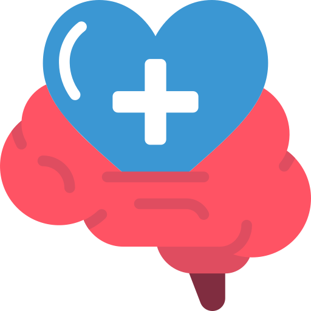

About Mental Health
What is Mental Health?
 Mental health includes our emotional, psychological, and social well-being. It affects how we think, feel, and act. It also helps determine how we handle stress, relate to others, and make healthy choices. Mental health is important at every stage of life, from childhood and adolescence through adulthood.
Although the terms are often used interchangeably, poor mental health and mental illness are not the same. A person can experience poor mental health and not be diagnosed with a mental illness. Likewise, a person diagnosed with a mental illness can experience periods of physical, mental, and social well-being. (Centers for Disease Control and Protection, 2021)
Why is Mental Health important for our overall health?
Mental and physical wellbeing are similarly significant in terms of overall wellbeing of a person. For instance, depression builds the danger for some sorts of physical medical issues, especially long-lasting conditions like diabetes, coronary illness, and stroke. Additionally, the presence of persistent conditions can expand the danger for mental wellbeing. (Centers for Disease Control and Protection, 2021)
Can your mental health change over time?
Yes, it's important to remember that an individual's mental health can change after some time, and it's dependent upon many elements. At the point when the requests put on an individual surpass their assets and mental capacities, their mental health could be affected. For instance, in case somebody is working extended periods, caring for a family member, or encountering financial difficulty, they might encounter poor mental well-being. (Centers for Disease Control and Protection, 2021)
Mental Health Disorders
What are Mental Health Disorders?
Mental illness, also called mental health disorders, refers to a wide range of mental health conditions — disorders that affect your mood, thinking and behavior. Many people have mental health concerns from time to time. But a mental health concern becomes a mental illness when ongoing signs and symptoms cause frequent stress and affect your ability to function. A mental illness can make you miserable and can cause problems in your daily life, such as at school or work or in relationships. In most cases, symptoms can be managed with a combination of medications and talk therapy (psychotherapy).
Risk Factors of Mental Health Disorders
Certain factors may increase your risk of developing a mental illness, including:
- A history of mental illness in a blood relative, such as a parent or sibling
- Stressful life situations, such as financial problems, a loved one's death or a divorce
- An ongoing (chronic) medical condition, such as diabetes
- Brain damage as a result of a serious injury (traumatic brain injury), such as a violent blow to the head
- Traumatic experiences, such as military combat or assault
- Use of alcohol or recreational drugs
- A childhood history of abuse or neglect
- Few friends or few healthy relationships
- A previous mental illness
Mental illness is common. About 1 in 5 adults has a mental illness in any given year. Mental illness can begin at any age, from childhood through later adult years, but most cases begin earlier in life.
The effects of mental illness can be temporary or long lasting. You also can have more than one mental health disorder at the same time. For example, you may have depression and a substance use disorder.
Types of Mental Health Disorders
Anxiety Disorders
Anxiety is a normal reaction to stress and can be beneficial in some situations. It can alert us to dangers and help us prepare and pay attention. Anxiety disorders differ from normal feelings of nervousness or anxiousness, and involve excessive fear or anxiety. Anxiety disorders are the most common of mental disorders and affect nearly 30% of adults at some point in their lives. But anxiety disorders are treatable and a number of effective treatments are available. Treatment helps most people lead normal productive lives.
Anxiety refers to anticipation of a future concern and is more associated with muscle tension and avoidance behavior.
Fear is an emotional response to an immediate threat and is more associated with a fight or flight reaction – either staying to fight or leaving to escape danger.
Anxiety disorders can cause people to try to avoid situations that trigger or worsen their symptoms. Job performance, school work and personal relationships can be affected.
In general, for a person to be diagnosed with an anxiety disorder, the fear or anxiety must:
- Be out of proportion to the situation or age inappropriate
- Hinder ability to function normally
Risk Factors of Anxiety Disorders
Researchers are finding that both genetic and environmental factors contribute to the risk of developing an anxiety disorder. Although the risk factors for each type of anxiety disorder can vary, some general risk factors for all types of anxiety disorders include:
- Temperamental traits of shyness or behavioral inhibition in childhood
- Exposure to stressful and negative life or environmental events in early childhood or adulthood
- A history of anxiety or other mental illnesses in biological relatives
- Some physical health conditions, such as thyroid problems or heart arrhythmias, or caffeine or other substances/medications, can produce or aggravate anxiety symptoms; a physical health examination is helpful in the evaluation of a possible anxiety disorder.
Types of Anxiety Disorders
What is Generalized Anxiety Disorder (GAD)?
Occasional anxiety is a normal part of life. You might worry about things like health, money, or family problems. But people with generalized anxiety disorder (GAD) feel extremely worried or feel nervous about these and other things—even when there is little or no reason to worry about them. People with GAD find it difficult to control their anxiety and stay focused on daily tasks.
Signs and Symptoms of GAD
GAD develops slowly. It often starts during the teen years or young adulthood. People with GAD may:
- Worry very much about everyday things
- Have trouble controlling their worries or feelings of nervousness
- Know that they worry much more than they should
- Feel restless and have trouble relaxing
- Have a hard time concentrating
- Be easily startled
- Have trouble falling asleep or staying asleep
- Feel easily tired or tired all the time
- Have headaches, muscle aches, stomach aches, or unexplained pains
- Have a hard time swallowing
- Tremble or twitch
- Be irritable or feel “on edge”
- Sweat a lot, feel light-headed or out of breath
- Have to go to the bathroom a lot
How is GAD treated?
First, a person would have to talk to a doctor about their symptoms. The doctor should do an exam and ask the person about their health history to make sure that an unrelated physical problem is not causing their symptoms. The doctor may refer the person to a mental health specialist, such as a psychiatrist or psychologist. GAD is generally treated with psychotherapy, medication, or both. The doctor may discuss with them the best treatment for them.
The mediactions that work effectively for people with GAD are Selective serotonin reuptake inhibitors (SSRIs), Serotonin-norepinephrine reuptake inhibitors (SNRIs), other serotonergic medication, and Benzodiazepines. These are the medications that a doctor may prescribe a person with GAD. Doctors do commonly use SSRIs and SNRIs to treat depression, but they are also helpful for the symptoms of GAD. They may take several weeks to start working. These medications may also cause side effects, such as headaches, nausea, or difficulty sleeping. These side effects are usually not severe for most people, especially if the dose starts off low and is increased slowly over time.
A type of psychotherapy called cognitive behavioral therapy (CBT) is especially useful for treating GAD. CBT teaches a person different ways of thinking, behaving, and reacting to situations that help him or her feel less anxious and worried. This may also be a treatment plan for a person with GAD. Both psychotherapy and medication can take some time to work. A healthy lifestyle can also help combat anxiety. Enough sleep and exercise, a healthy diet, and a support system, can combat anxiety.
What is Panic Disorder?
People with panic disorder have sudden and repeated attacks of fear that last for several minutes or longer. These are called panic attacks. Panic attacks are characterized by a fear of disaster or of losing control even when there is no real danger. A person may also have a strong physical reaction during a panic attack. It may feel like having a heart attack. Panic attacks can occur at any time, and many people with panic disorder worry about and dread the possibility of having another attack.
A person with panic disorder may become discouraged and feel ashamed because he or she cannot carry out normal routines like going to school or work, going to the grocery store, or driving.
Panic disorder often begins in the late teens or early adulthood. More women than men have panic disorder. But not everyone who experiences panic attacks will develop panic disorder.
Signs and Symptoms of Panic Disorder
People with Panic Disorder may experience:
- Sudden and repeated panic attacks of overwhelming anxiety and fear
- A feeling of being out of control, or a fear of death or impending doom during a panic attack
- Physical symptoms during a panic attack, such as a pounding or racing heart, sweating, chills, trembling, breathing problems, weakness or dizziness, tingly or numb hands, chest pain, stomach pain, and nausea
- An intense worry about when the next panic attack will happen
- A fear or avoidance of places where panic attacks have occurred in the past
How is Panic Disorder treated?
First, a person would have to talk to a doctor about their symptoms. The doctor should do an exam and ask the person about their health history to make sure that an unrelated physical problem is not causing their symptoms. The doctor may refer the person to a mental health specialist, such as a psychiatrist or psychologist. Panic Disorder is generally treated with psychotherapy, medication, or both. The doctor may discuss with them the best treatment for them.
The mediactions that work effectively for people with GAD are Selective serotonin reuptake inhibitors (SSRIs), Serotonin-norepinephrine reuptake inhibitors (SNRIs), Beta-blockers, and Benzodiazepines. These are the medications that a doctor may prescribe a person with Panic Disorder. Doctors do commonly use SSRIs and SNRIs to treat depression, but they are also helpful for the symptoms of GAD. They may take several weeks to start working. These medications may also cause side effects, such as headaches, nausea, or difficulty sleeping. These side effects are usually not severe for most people, especially if the dose starts off low and is increased slowly over time.
A type of psychotherapy called cognitive behavioral therapy (CBT) is especially useful as a first-line treatment for panic disorder. CBT teaches the person with panic disorder different ways of thinking, behaving, and reacting to the feelings that come on with a panic attack. The attacks can begin to disappear once they learn to react differently to the physical sensations of anxiety and fear that occur during panic attacks.
What are Specific Phobias?
Specific phobias are an overwhelming and unreasonable fear of objects or situations that pose little real danger but provoke anxiety and avoidance. Unlike the brief anxiety you may feel when giving a speech or taking a test, specific phobias are long lasting, cause intense physical and psychological reactions, and can affect your ability to function normally at work, at school or in social settings.
Common Categories of Specific Phobias
- Situations, such as airplanes, enclosed spaces or going to school
- Nature, such as thunderstorms or heights
- Animals or insects, such as dogs or spiders
- Blood, injection or injury, such as needles, accidents or medical procedures
- Others, such as choking, vomiting, loud noises or clowns
Each specific phobia is referred to by its own term. Examples of more common terms include acrophobia for the fear of heights and claustrophobia for the fear of confined spaces.
Common Reactions of People with Specific Phobia
A specific phobia involves an intense, persistent fear of a specific object or situation that's out of proportion to the actual risk. There are many types of phobias, and it's not unusual to experience a specific phobia about more than one object or situation. Specific phobias can also occur along with other types of anxiety disorders.
No matter what your specific phobia is it's likely to produce these types of reactions:
- An immediate feeling of intense fear, anxiety and panic when exposed to or even thinking about the source of your fear
- Awareness that your fears are unreasonable or exaggerated but feeling powerless to control them
- Worsening anxiety as the situation or object gets closer to you in time or physical proximity
- Doing everything possible to avoid the object or situation or enduring it with intense anxiety or fear
- Difficulty functioning normally because of your fear
- Physical reactions and sensations, including sweating, rapid heartbeat, tight chest or difficulty breathing
- Feeling nauseated, dizzy or fainting around blood or injuries
- In children, possibly tantrums, clinging, crying, or refusing to leave a parent's side or approach their fear
When to see a doctor? And how are Specific Phobias Treated?
However an irrational fear can be bothersome — like taking the stairs instead of the elevator or driving the long way to work instead of using the highway — it isn't generally considered as specific phobia unless it significantly disrupts your life. Consult your doctor or a mental health specialist if anxiety is affecting with your ability to function at work, school, or in social situations.
Exposure therapy, a type of psychotherapy, is among the most effective treatment for specific phobias. Other therapies or medications may be recommended by your doctor. Understanding the cause of a phobia is far less significant than focusing on how to treat the phobia's long-term avoidance behavior. Also, cognitive behavioral therapy (CBT) may also be an effective treatment against specific phobias. It involves exposure combined with other techniques to learn ways to view and cope with the feared object or situation differently.
Medications are only used for initial treatment or for short-term use in specific, infrequent unencountered situations. Such medications like Beta-blockers, Selective serotonin reuptake inhibitors (SSRIs), and Benzodiazepines, are some of them used to ease the reactions specific phobias are causing.
What is Agoraphobia?
Agoraphobia is a type of anxiety disorder in which a person may have intense fear and avoid places or situations that might cause them to panic and make then feel trapped, helpless or embarrassed. People with agoraphobia often avoid these situations, in part, because they think being able to leave might be difficult or impossible in the event they have panic-like reactions or other embarrassing symptoms. In the most severe form of agoraphobia, an individual can become housebound.
The anxiety is caused by fear that there's no easy way to escape or get help if the anxiety intensifies. Most people who have agoraphobia develop it after having one or more panic attacks, causing them to worry about having another attack and avoid the places where it may happen again.
Symptoms of Agoraphobia
Common Symptoms of Agoraphobia are fear of:
- Leaving home alone
- Crowds or waiting in line
- Enclosed spaces, such as movie theaters, elevators or small stores
- Open spaces, such as parking lots, bridges or malls
- Using public transportation, such as a bus, plane or train
Other symptoms may include:
- Fear or anxiety almost always results from exposure to the situation
- Fear or anxiety is out of proportion to the actual danger of the situation
- The person may avoid the situation, needs a companion to go with them, or they endure the situation but are extremely distressed
- Experience significant distress or problems with social situations, work or other areas in your life because of the fear, anxiety or avoidance
- Avoidance usually lasts six months or longer
How is Agoraphobia treated?
Agoraphobia can severely limit your ability to socialize, work, attend important events and even manage the details of daily life, such as running errands. First, a person would have to talk to a doctor about their symptoms. Agoraphobia is generally treated with psychotherapy, medication, or both. The doctor may discuss with them the best treatment for them.
Cognitive behavioral therapy is one of the most effective forms of psychotherapy for anxiety disorders, including agoraphobia. If someone with agoraphobia have trouble leaving their home, you may wonder how they could possibly go to a therapist's office. Therapists who treat agoraphobia are well aware of this problem. If they feel homebound due to agoraphobia, they can look for a therapist who can help find alternatives to office appointments, at least in the early part of treatment. They may offer to see the person with agoraphobia first in their home or meet them in what they consider a safe place (safe zone). Some therapists may also offer some sessions over the phone, through email, or using computer programs or other media.
Certain types of antidepressants are often used to treat agoraphobia, and sometimes anti-anxiety drugs are used on a limited basis. Antidepressants are more effective than anti-anxiety medications in the treatment of agoraphobia. Antidepressants called Selective serotonin reuptake inhibitors (SSRIs), such as fluoxetine (Prozac) and sertraline (Zoloft), are used for the treatment of panic disorder with agoraphobia. Anti-anxiety drugs called benzodiazepines are sedatives that, in limited circumstances, the person's doctor may prescribe to temporarily relieve anxiety symptoms. Benzodiazepines are generally used only for relieving acute anxiety on a short-term basis. They may take several weeks to start working. These medications may also cause side effects, such as headaches, nausea, or difficulty sleeping. The person's doctor likely will gradually increase their dose during treatment, and slowly decrease their dose when they feels they're ready to stop taking medication.
What is Social Anxiety Disorder?
Social anxiety disorder or some would like to call it social phobia is a common type of anxiety disorder. A person with social anxiety disorder feels symptoms of anxiety or fear in certain or all social situations, such as meeting new people, dating, being on a job interview, answering a question in class, or having to talk to a cashier in a store. Doing everyday things in front of people—such as eating or drinking in front of others or using a public restroom—also causes anxiety or fear. The person is afraid that they will be humiliated, judged, and rejected.
The fear that people with social anxiety disorder have in social situations is so strong that they feel it is beyond their ability to control. As a result, it gets in the way of going to work, attending school, or doing everyday things. People with social anxiety disorder may worry about these and other things for weeks before they happen. Sometimes, they end up staying away from places or events where they think they might have to do something that will embarrass them.
Signs and Symptoms of Social Anxiety Disorder
When being in social situations such as performing or just be infront of others people with social anxiety disorder tend to:
- Blush, sweat, tremble, feel a rapid heart rate, or feel their “mind going blank”
- Feel nauseous or sick to their stomach
- Show a rigid body posture, make little eye contact, or speak with an overly soft voice
- Find it scary and difficult to be with other people, especially those they don’t already know, and have a hard time talking to them even though they wish they could
- Be very self-conscious in front of other people and feel embarrassed and awkward
- Be very afraid that other people will judge them
- Stay away from places where there are other people
How is Social Anxiety Disorder treated?
Just like any other mental health problems, a person will have to talk to their doctors about their symptoms. They will do an exam and ask about their health history in order to make sure that an unrelated physical issue is not causing their symptoms. Their doctor might refer them to a psychologist, psychiatrist, clinical social worker, or counselor. The first step of effective treatment is to have a diagnosis made, usually by a mental health specialist. Social anxiety disorder is generally treated with psychotherapy, medication, or both. They can talk to their doctor or a health care provider about the best treatment for them.
Cognitive behavioral therapy (CBT), a type of psychotherapy, is especially useful for treating social anxiety disorder. CBT teaches you different ways of thinking, behaving, and reacting to situations that help you feel less anxious and fearful. It can also help you learn and practice social skills. CBT delivered in a group format can be especially helpful.
Many people with social anxiety also find support groups helpful. In a group of people who all have social anxiety disorder, you can receive unbiased, honest feedback about how others in the group see you. This way, you can learn that your thoughts about judgment and rejection are not true or are distorted. You can also learn how others with social anxiety disorder approach and overcome the fear of social situations.
Medications that can help treat social anxiety disorder are Selective serotonin reuptake inhibitors (SSRIs), Serotonin-norepinephrine reuptake inhibitors (SNRIs), Benzodiazepines (Anti-anxiety), and Beta-blockers. Anti-anxiety medications are powerful and begin working right away to reduce anxious feelings; however, these medications are usually not taken for long periods of time. People can build up a tolerance if they are taken over a long period of time and may need higher and higher doses to get the same effect. In contrast to anti-anxiety medications, they may take several weeks to start working. Antidepressants may also cause side effects, such as headaches, nausea, or difficulty sleeping. These side effects are usually not severe for most people, especially if the dose starts off low and is increased slowly over time. Beta-blockers are medicines that can help block some of the physical symptoms of anxiety on the body, such as an increased heart rate, sweating, or tremors. Beta-blockers are commonly the medications of choice for the “performance anxiety” type of social anxiety.
What is Separation Anxiety Disorder?
Separation anxiety is often thought of as something that only children deal with; however, adults can also be diagnosed with separation anxiety disorder. People who have separation anxiety disorder have fears about being parted from people to whom they are attached. They often worry that some sort of harm or something untoward will happen to their attachment figures while they are separated. This fear leads them to avoid being separated from their attachment figures and to avoid being alone. People with separation anxiety may have nightmares about being separated from attachment figures or experience physical symptoms when separation occurs or is anticipated.
Signs and Symptoms of Separation Anxiety Disorder
Separation anxiety disorder is diagnosed when symptoms are excessive for the developmental age and cause significant distress in daily functioning. Symptoms may include:
- Recurrent and excessive distress about anticipating or being away from home or loved ones
- Constant, excessive worry about losing a parent or other loved one to an illness or a disaster
- Constant worry that something bad will happen, such as being lost or kidnapped, causing separation from parents or other loved ones
- Refusing to be away from home because of fear of separation
- Not wanting to be home alone and without a parent or other loved one in the house
- Reluctance or refusing to sleep away from home without a parent or other loved one nearby
- Repeated nightmares about separation
- Frequent complaints of headaches, stomachaches or other symptoms when separation from a parent or other loved one is anticipated
How is Separation Anxiety Disorder treated?
Separation anxiety disorder is usually treated with psychotherapy, sometimes along with medication. Psychotherapy, sometimes called talk therapy or psychological counseling, involves working with a therapist to reduce separation anxiety symptoms.
Cognitive behavioral therapy (CBT) is an effective form of psychotherapy for separation anxiety disorder. During therapy your child can learn how to face and manage fears about separation and uncertainty. In addition, parents can learn how to effectively provide emotional support and encourage age appropriate independence.
Sometimes, combining medication with CBT may be helpful if symptoms are severe. Antidepressants called selective serotonin reuptake inhibitors (SSRIs) may be an option for older children and adults.
Selective Mutism
A somewhat rare disorder associated with anxiety is selective mutism. Selective mutism occurs when people fail to speak in specific social situations despite having normal language skills. Selective mutism usually occurs before the age of 5 and is often associated with extreme shyness, fear of social embarrassment, compulsive traits, withdrawal, clinging behavior, and temper tantrums. People diagnosed with selective mutism are often also diagnosed with other anxiety disorders.
Mood Disorders
Moods are our emotions. They affect us every day. Sometimes we’re sad, other times we’re happy. We might even be sad and happy in the same day. But sometimes people’s mood can get “stuck” on sad. Or the moods might change a lot or become extreme. When this happens, it affects our lives. And it might be caused by a group of mental illnesses called mood disorders.
Mood disorders are a group of mental illnesses that affect how you feel and think about yourself, other people and life in general.
Risk Factors of Mood Disorders
A number of factors increase the risk of developing mood disorders. Not all people with risk factors will get mood disorders. Risk factors for mood disorders include:
- Adolescence
- Alcohol or drug use
- Certain medical conditions such as hypothyroidism (underactive thyroid) or chroni pain
- Certain medications
- Family history of mood disorders
- Female gender
- Isolation from other people
- Personal history of sleep disorders
- Recent traumatic life event such as divorce or death in the family
People are able to lower their risk of mood disorders by:
- Avoiding drugs and alcohol
- Engaging in activities that make you happy
- Engaging in social activities
- Getting enough sleep
- Getting regular exercise
- Seeking support after difficult life events such as divorce or loss of a loved one
Types of Mood Disorders
What is Major Depressive Disorder?
Major Depressive Disorder (MDD) is a common and serious medical illness that negatively affects how a person feels, the way they think and how they act. Fortunately, it is also treatable. MDD causes feelings of sadness and/or a loss of interest in activities a person once enjoyed. It can lead to a variety of emotional and physical problems and can decrease a person's ability to function at work and at home.
Signs and Symptoms of MDD
Depression symptoms can vary from mild to severe and can include:
- Persistently low or depressed mood
- Anhedonia or decreased interest in pleasurable activities
- Lack of energy
- Poor concentration
- Appetite changes
- Psychomotor retardation or agitation
- Sleep disturbances
- Suicidal thoughts
Psychotic Depression
Psychotic depression is a subtype of major depressive disorder (MDD). It is also referred to as MDD with psychotic features.
Psychosis is not a condition in and of itself, but rather a symptom or an experience. Psychosis refers to the experience of losing touch with reality. This primarily happens in two ways:
- Hallucinations: Sensory experiences not based in reality, such as seeing, hearing, tasting, feeling (through touch), or smelling things that are not really there and that others cannot sense.
- Delusions: Persistent false beliefs that are not grounded in reality, such as paranoia, a sense that someone is trying to harm you.
A person experiencing psychosis can have either hallucinations or delusions, or a combination of both.Symptoms of psychosis (sometimes described as a psychotic episode) are generally part of a bigger condition such as schizophrenia, depression, or Parkinson's disease. Psychosis can also occur with certain medications, substance use, or other health problems.
Per the Diagnostic and Statistical Manual of Mental Disorders, 5th Edition (DSM-5), a person must have five of the above-mentioned symptoms, of which one must be a depressed mood or anhedonia causing social or occupational impairment, to be diagnosed with MDD. History of a manic or hypomanic episode must also be ruled out to make a proper diagnosis of MDD. Children and adolescents with MDD may present with irritable mood.
How is MDD treated?
Major depressive disorder can be managed with various treatment modalities, including pharmacological (medications), psychotherapy, interventional, and lifestyle modification. The initial treatment of MDD includes medications or/and psychotherapy. Combination treatment, including both medications and psychotherapy, has been found to be more effective than either of these treatments alone.
Before a diagnosis or treatment, a health professional should conduct a thorough diagnostic evaluation, including an interview and a physical examination. In some cases, a blood test might be done to make sure the depression is not due to a medical condition like a thyroid problem or a vitamin deficiency (reversing the medical cause would alleviate the depression-like symptoms). The evaluation will identify specific symptoms and explore medical and family histories as well as cultural and environmental factors with the goal of arriving at a diagnosis and planning a course of action.
Brain chemistry may contribute to an individual’s depression and may factor into their treatment. For this reason, antidepressants might be prescribed to help modify one’s brain chemistry. Medications such as: Selective serotonin reuptake inhibitors(SSRIs), Serotonin-norepinephrine reuptake inhibitors(SNRIs), Serotonin modulators, Atypical antidepressants, Tricyclic antidepressants(TCAs), Monoamine oxidase inhibitors (MAOIs), and other medications include mood-stabilizers, antipsychotics, may be prescribed for the treatment of MDD. All antidepressants are equally effective but differ in side-effect profiles.
What is Postpartum Depression?
Postpartum depression (peripartum depression) is a complex mix of physical, emotional, and behavioral changes that occur after giving birth that are attributed to the chemical, social, and psychological changes associated with having a baby. Postpartum depression is common. As many as 50 to 75% of new mothers experience the "baby blues" after delivery. Up to 15% of these women will develop a more severe and longer-lasting depression, called postpartum depression, after delivery. One in 1,000 women develop the more serious condition called postpartum psychosis.
What are the different types of Postpartum Depression?
Postpartum blues: Better known as the "baby blues," this condition affects between 50 and 75% of women after delivery. If you are experiencing the baby blues, you will have frequent, prolonged bouts of crying for no apparent reason, sadness, and anxiety. The condition usually begins in the first week (one to four days) after delivery. Although the experience is unpleasant, the condition usually subsides within two weeks without treatment. All you'll need is reassurance and help with the baby and household chores.
Postpartum depression: This is a far more serious condition than postpartum blues, affecting about 1 in 10 new mothers. If you've had postpartum depression before, your risk increases to 30%. You may experience alternating highs and lows, frequent crying, irritability, and fatigue, as well as feelings of guilt, anxiety, and inability to care for your baby or yourself. Symptoms range from mild to severe and may appear within days of the delivery or gradually, even up to a year later. Although symptoms can last from several weeks up to a year, treatment with psychotherapy or antidepressants is very effective.
Postpartum psychosis: This is an extremely severe form of postpartum depression and requires emergency medical attention. This condition is relatively rare, affecting only 1 in 1,000 women after delivery. The symptoms generally occur quickly after delivery and are severe, lasting for a few weeks to several months. Symptoms include severe agitation, confusion, feelings of hopelessness and shame, insomnia, paranoia, delusions or hallucinations, hyperactivity, rapid speech, or mania. Postpartum psychosis requires immediate medical attention since there is an increased risk of suicide and risk of harm to the baby. Treatment will usually include admission to hospital for the mother and medicine.
Signs and Symptoms of Postpartum Depression
- Thoughts of harming yourself or your baby.
- Recurrent thoughts of death or suicide.
- Depressed mood for most of the day, nearly every day for the last two weeks.
- Feeling anxious, guilty, hopeless, scared, panicked or worthless.
- Difficulty thinking, concentrating making decisions, or dealing with everyday situations.
- Loss of interest or pleasure in most of the activities during the day nearly everyday for the last two weeks.
Risk Factors of Postpartum Depression
- Having a personal or family history of depression or premenstrual dysphoric disorder (PMDD).
- Limited social support.
- Marital conflict.
- Ambivalence about the pregnancy.
- A history of depression during pregnancy — 50% of depressed pregnant women will have postpartum depression.
How is Postpartum Depression treated?
Postpartum depression is treated differently depending on the type and severity of the woman's symptoms. Treatment options include anti-anxiety or antidepressant medicines , psychotherapy, and support group participation. In the case of postpartum psychosis, medicines used to treat psychosis are usually added. Hospital admission is also usually necessary. If you are breastfeeding, don't assume that you can't take medicines for depression, anxiety, or even psychosis.
What is Persistent Depressive Disorder?
Persistent depressive disorder, also called dysthymia, is a continuous long-term (chronic) form of depression. A person with dysthymia may lose interest in normal daily activities, feel hopeless, lack productivity, and have low self-esteem and an overall feeling of inadequacy. These feelings last for years and may significantly interfere with their relationships, school, work and daily activities.
If a person has persistent depressive disorder, they may find it hard to be upbeat even on happy occasions — they may be described as having a gloomy personality, constantly complaining or incapable of having fun. Though persistent depressive disorder is not as severe as major depression, they current depressed mood may be mild, moderate or severe.
Risk Factors of Persistent Depressive Disorder
Persistent depressive disorder often begins early — in childhood, the teen years or young adult life — and is chronic. Certain factors appear to increase the risk of developing or triggering persistent depressive disorder, including:
- Having a first-degree relative with major depressive disorder or other depressive disorders
- Traumatic or stressful life events, such as the loss of a loved one or financial problems
- Personality traits that include negativity, such as low self-esteem and being too dependent, self-critical or pessimistic
- History of other mental health disorders, such as a personality disorder
Signs and Symptoms of Persistent Depressive Disorder
Persistent depressive disorder symptoms usually come and go over a period of years, and their intensity can change over time. But typically symptoms don't disappear for more than two months at a time. In addition, major depression episodes may occur before or during persistent depressive disorder — this is sometimes called double depression.
Symptoms of persistent depressive disorder can cause significant impairment and may include:
- Loss of interest in daily activities
- Sadness, emptiness or feeling down
- Hopelessness
- Tiredness and lack of energy
- Low self-esteem, self-criticism or feeling incapable
- Trouble concentrating and trouble making decisions
- Irritability or excessive anger
- Decreased activity, effectiveness and productivity
- Avoidance of social activities
- Feelings of guilt and worries over the past
- Poor appetite or overeating
- Sleep problems
In children, symptoms of persistent depressive disorder may include depressed mood and irritability.
How is Persistent Depressive Disorder Treated?
The two main treatments for persistent depressive disorder are medications and talk therapy (psychotherapy). The treatment approach of a person's doctor recommends depends on factors such as:
- Severity of their symptoms
- Their desire to address emotional or situational issues affecting your life
- Their personal preferences
- Previous treatment methods
- Their ability to tolerate medications
- Other emotional problems theirmay have
Psychotherapy may be the first recommendation for children and adolescents with persistent depressive disorder, but that depends on the individual. Sometimes antidepressants are also needed.
The types of antidepressants most commonly used to treat persistent depressive disorder include: Selective serotonin reuptake inhibitors (SSRIs), Tricyclic antidepressants (TCAs), Serotonin and norepinephrine reuptake inhibitors (SNRIs)
Psychotherapy is a general term for treating depression by talking about the person's condition and related issues with a mental health professional. Psychotherapy is also known as talk therapy or psychological counseling. Different types of psychotherapy, such as cognitive behavioral therapy, can be effective for persistent depressive disorder.
What is Seasonal Affective Disorder?
Many people go through short periods of time where they feel sad or not like their usual selves. Sometimes, these mood changes begin and end when the seasons change. People may start to feel "down" when the days get shorter in the fall and winter (also called "winter blues") and begin to feel better in the spring, with longer daylight hours.
In some cases, these mood changes are more serious and can affect how a person feels, thinks, and handles daily activities. If you have noticed significant changes in your mood and behavior whenever the seasons change, you may be suffering from seasonal affective disorder (SAD), a type of depression.
In most cases, SAD symptoms start in the late fall or early winter and go away during the spring and summer; this is known as winter-pattern SAD or winter depression. Some people may experience depressive episodes during the spring and summer months; this is called summer-pattern SAD or summer depression and is less common.
Risk Factors of Seasonal Affective Disorder
Seasonal affective disorder is diagnosed more often in women than in men. And SAD occurs more frequently in younger adults than in older adults.
Factors that may increase your risk of seasonal affective disorder include:
- Family history: People with SAD may be more likely to have blood relatives with SAD or another form of depression.
- Having major depression or bipolar disorder: Symptoms of depression may worsen seasonally if you have one of these conditions.
- Living far from the equator: SAD appears to be more common among people who live far north or south of the equator. This may be due to decreased sunlight during the winter and longer days during the summer months.
- Low level of vitamin D: Some vitamin D is produced in the skin when it's exposed to sunlight. Vitamin D can help to boost serotonin activity. Less sunlight and not getting enough vitamin D from foods and other sources may result in low levels of vitamin D in the body.
Signs and Symptomps of Seasonal Affective Disorder
SAD is not considered a separate disorder but is a type of depression characterized by its recurrent seasonal pattern, with symptoms lasting about 4 to 5 months per year. Therefore, the signs and symptoms of SAD include those associated with major depression, and some specific symptoms that differ for winter-pattern and summer-pattern SAD. Not every person with SAD will experience all of the symptoms listed below.
Signs and symptoms of SAD may include:
- Feeling listless, sad or down most of the day, nearly every day
- Losing interest in activities you once enjoyed
- Having low energy and feeling sluggish
- Having problems with sleeping too much
- Experiencing carbohydrate cravings, overeating and weight gain
- Having difficulty concentrating
- Feeling hopeless, worthless or guilty
- Having thoughts of not wanting to live
Fall and winter SAD
Symptoms specific to winter-onset SAD, sometimes called winter depression, may include:
- Oversleeping
- Appetite changes, especially a craving for foods high in carbohydrates
- Weight gain
- Tiredness or low energy
Spring and summer SAD
Symptoms specific to summer-onset seasonal affective disorder, sometimes called summer depression, may include:
- Trouble sleeping (insomnia)
- Poor appetite
- Weight loss
- Agitation or anxiety
- Increased irritability
How is Seasonal Affective Disorder treated?
Treatment for seasonal affective disorder may include light therapy, psychotherapy and medications.
Light therapy (phototherapy), for this treatment, the person sits in front of a very bright light box (10,000 lux) every day for about 30 to 45 minutes, usually first thing in the morning, from fall to spring. The light boxes, which are about 20 times brighter than ordinary indoor light, filter out the potentially damaging UV light, making this a safe treatment for most. However, people with certain eye diseases or people taking certain medications that increase sensitivity to sunlight may need to use alternative treatments or use light therapy under medical supervision.
Cognitive behavioral therapy (CBT) is a type of talk therapy aimed at helping people learn how to cope with difficult situations; CBT also has been adapted for people with SAD (CBT-SAD). It is typically conducted in two weekly group sessions for 6 weeks and focuses on replacing negative thoughts related to the winter season (e.g., about the darkness of winter) with more positive thoughts. CBT-SAD also uses a process called behavioral activation, which helps individuals identify and schedule pleasant, engaging indoor or outdoor activities to combat the loss of interest they typically experience in the winter.
Because SAD, like other types of depression, is associated with disturbances in serotonin activity, antidepressant medications called selective serotonin reuptake inhibitors (SSRIs) are also used to treat SAD when symptoms occur. These agents can significantly enhance patients' moods. Commonly used SSRIs include fluoxetine, citalopram, sertraline, paroxetine, and escitalopram. The U.S. Food and Drug Administration (FDA) also has approved another type of antidepressant, bupropion, in an extended-release form, that can prevent recurrence of seasonal major depressive episodes when taken daily from the fall until the following early spring.
Because many people with SAD often have vitamin D deficiency, nutritional supplements of vitamin D may help improve their symptoms. However, studies testing whether vitamin D is effective in SAD treatment have produced mixed findings, with some results indicating that it is as effective as light therapy but others detecting no effect.
What is Bipolar Disorder?
Bipolar disorder (formerly called manic-depressive illness or manic depression) is a mental disorder that causes unusual shifts in mood, energy, activity levels, concentration, and the ability to carry out day-to-day tasks.
There are three types of bipolar disorder. All three types involve clear changes in mood, energy, and activity levels. These moods range from periods of extremely "up," elated, irritable, or energized behavior (known as manic episodes) to very "down," sad, indifferent, or hopeless periods (known as depressive episodes). Less severe manic periods are known as hypomanic episodes.
- Bipolar I Disorder— defined by manic episodes that last at least 7 days, or by manic symptoms that are so severe that the person needs immediate hospital care. Usually, depressive episodes occur as well, typically lasting at least 2 weeks. Episodes of depression with mixed features (having depressive symptoms and manic symptoms at the same time) are also possible.
- Bipolar II Disorder— defined by a pattern of depressive episodes and hypomanic episodes, but not the full-blown manic episodes that are typical of Bipolar I Disorder.
- Cyclothymic Disorder (also called Cyclothymia)— defined by periods of hypomanic symptoms as well as periods of depressive symptoms lasting for at least 2 years (1 year in children and adolescents). However, the symptoms do not meet the diagnostic requirements for a hypomanic episode and a depressive episode.
Sometimes a person might experience symptoms of bipolar disorder that do not match the three categories listed above, which is referred to as "other specified and unspecified bipolar and related disorders."
Bipolar disorder is typically diagnosed during late adolescence (teen years) or early adulthood. Occasionally, bipolar symptoms can appear in children. Bipolar disorder can also first appear during a woman's pregnancy or following childbirth. Although the symptoms may vary over time, bipolar disorder usually requires lifelong treatment. Following a prescribed treatment plan can help people manage their symptoms and improve their quality of life.
Risk Factors of Bipolar Disorder
Researchers are studying the possible causes of bipolar disorder. Most agree that there is no single cause and it is likely that many factors contribute to a person's chance of having the illness.
- Brain Structure and Functioning: Some studies indicate that the brains of people with bipolar disorder may differ from the brains of people who do not have bipolar disorder or any other mental disorder. Learning more about these differences may help scientists understand bipolar disorder and determine which treatments will work best. At this time, health care providers base the diagnosis and treatment plan on a person's symptoms and history, rather than brain imaging or other diagnostic tests.
- Genetics: Some research suggests that people with certain genes are more likely to develop bipolar disorder. Research also shows that people who have a parent or sibling with bipolar disorder have an increased chance of having the disorder themselves. Many genes are involved, and no one gene can cause the disorder. Learning more about how genes play a role in bipolar disorder may help researchers develop new treatments.
Signs and Symptoms of Bipolar Disorder
People with bipolar disorder experience periods of unusually intense emotion, changes in sleep patterns and activity levels, and uncharacteristic behaviors—often without recognizing their likely harmful or undesirable effects. These distinct periods are called "mood episodes." Mood episodes are very different from the moods and behaviors that are typical for the person. During an episode, the symptoms last every day for most of the day. Episodes may also last for longer periods, such as several days or weeks.
Manic Episode symptoms
- Feel very "up," "high," elated, or irritable or touchy
- Feel "jumpy" or "wired"
- Have a decreased need for sleep
- Have a loss of appetite
- Talk very fast about a lot of different things
- Feel like their thoughts are racing
- Think they can do a lot of things at once
- Do risky things that show poor judgment, such as eat and drink excessively, spend or give away a lot of money, or have reckless sex
- Feel like they are unusually important, talented, or powerful
Depressive Episode symptoms
- Feel very sad, "down," empty, worried, or hopeless
- Feel slowed down or restless
- Have trouble falling asleep, wake up too early, or sleep too much
- Experience increased appetite and weight gain
- Talk very slowly, feel like they have nothing to say, forget a lot
- Have trouble concentrating or making decisions
- Feel unable to do even simple things
- Have little interest in almost all activities, a decreased or absent sex drive, or an inability to experience pleasure ("anhedonia")
- Feel hopeless or worthless, think about death or suicide
How is Bipolar Disorder treated?
Treatment is best guided by a medical doctor who specializes in diagnosing and treating mental health conditions (psychiatrist) who is skilled in treating bipolar and related disorders.
Bipolar disorder is a lifelong condition. Treatment is directed at managing symptoms. Depending on a person's needs, treatment may include: Medications, Continued treatment, Day treatment programs, and Substance abuse treatment.
The primary treatments for bipolar disorder include medications and psychological counseling (psychotherapy) to control symptoms, and also may include education and support groups.
Medications such as, Mood stabilizers (lithium (Lithobid), valproic acid (Depakene), divalproex sodium (Depakote), carbamazepine (Tegretol, Equetro, others) and lamotrigine (Lamictal)), Antipsychotics (olanzapine (Zyprexa), risperidone (Risperdal), quetiapine (Seroquel), aripiprazole (Abilify), ziprasidone (Geodon), lurasidone (Latuda) or asenapine (Saphris)), Antidepressants, Antidepressant-antipsychotic (Symbyax), and Anti-anxiety (Benzodiazepines)can help in treating Bipolar Disorder.
Psychotherapy is a vital part of bipolar disorder treatment and can be provided in individual, family or group settings. Several types of therapy may be helpful. These include: Interpersonal and social rhythm therapy (IPSRT), Cognitive behavioral therapy (CBT), Psychoeducation, and Family-focused therapy. Interpersonal and social rhythm therapy (IPSRT), this psychotherapy focuses on the stabilization of daily rhythms, such as sleeping, waking and mealtimes. A consistent routine allows for better mood management. People with bipolar disorder may benefit from establishing a daily routine for sleep, diet and exercise. Cognitive behavioral therapy (CBT), the focus of CBT is identifying unhealthy, negative beliefs and behaviors and replacing them with healthy, positive ones. CBT can help identify what triggers your bipolar episodes. You also learn effective strategies to manage stress and to cope with upsetting situations. Psychoeducation, this psychotherapy is learning about bipolar disorder (psychoeducation) can help a person and their loved ones understand the condition. Knowing what's going on can helpthem get the best support, identify issues, make a plan to prevent relapse and stick with treatment. Family-focused therapy, family support and communication can help you stick with your treatment plan and help you and your loved ones recognize and manage warning signs of mood swings.
Depending on your needs, other treatments may be added to your depression therapy.
During electroconvulsive therapy (ECT), electrical currents are passed through the brain, intentionally triggering a brief seizure. ECT seems to cause changes in brain chemistry that can reverse symptoms of certain mental illnesses. ECT may be an option for bipolar treatment if you don't get better with medications, can't take antidepressants for health reasons such as pregnancy or are at high risk of suicide.
Transcranial magnetic stimulation (TMS) is being investigated as an option for those who haven't responded to antidepressants.
What is Premenstrual Dysphoric Disorder?
Premenstrual dysphoric disorder (PMDD) is a more serious form of premenstrual syndrome (PMS). PMS causes bloating, headaches and breast tenderness a week or two before your period. With PMDD, you might have PMS symptoms along with extreme irritability, anxiety or depression. These symptoms improve within a few days after your period starts, but they can be severe enough to interfere with your life.
Risk Factors, Signs, and Symptoms of Premenstrual Dysphoric Disorder
The major risk factors for PMDD include personal history of a mood or anxiety disorder, family history of premenstrual mood dysregulation, stress and age in the late 20's to mid-30's.
Psychological Symptoms
- Anxiety
- Feeling overwhelmed or out of control
- Increased depressed mood
- Irritability
- Mood Swings
- Sense of feeling overwhelmed
- Sensitivity to rejection
- Social withdrawal
- Sudden sadness or tearfulness
Physical Symptoms
- Abdominal bloating
- Appetite disturbance (usually increased)
- Breast tenderness
- Headaches
- Lethargy or fatigue
- Muscle aches and/or joint pain
- Sleep disturbance (usually hypersomnia)
- Swelling of extremities
Behavioral Symptoms
- Fatigue
- Forgetfulness
- Poor Concentration
How is Premenstrual Dysphoric Disorder treated?
Treatments for PMDD include:
Antidepressants called selective serotonin reuptake inhibitors (SSRIs). SSRIs change serotonin levels in the brain. The Food and Drug Administration (FDA) approved three SSRIs to treat PMDD: Sertraline, Fluoxetine, and Paroxetine HCI. Birth control pills. The FDA has approved a birth control pill containing drospirenone and ethinyl estradiol, to treat PMDD. Over-the-counter pain relievers may help relieve physical symptoms, such as cramps, joint pain, headaches, backaches, and breast tenderness. These include: Ibuprofen, Naproxen, and Aspirin. Stress management, such as relaxation techniques and spending time on activities you enjoy
Making healthy changes, such as eating a healthy combination of foods across the food groups, cutting back on salty and sugary foods, and getting more physical activity, may also help relieve some PMDD symptoms. But PMDD can be serious enough that some women should go to a doctor or nurse to discuss treatment options. And, if you are thinking of hurting yourself or others, call 911 right away.
Psychotic Disorders
Psychotic disorders are mental disorders in which a person's personality is severely confused and that person loses touch with reality. When a psychotic episode occurs, a person becomes unsure about what is real and what isn't real and usually experiences hallucinations, delusions, off-the-wall behavior, chaotic speech and incoherency. A person behaving in this manner is often referred to as being schizophrenic.
A hallucination is an internal sensory perception that isn't actually present and can be either visual or auditory. Smelling odors or having a funny taste in the mouth are other hallucinations that may occur. A delusion is defined as a false, inaccurate belief that a person holds on to. A grandiose delusion occurs when a person believes that their life is out of proportion as compared to what is really true. For example, a patient may believe that she is God or Jesus Christ. A persecutory delusion occurs when a person believes that there is a conspiracy amongst others to attack, punish or harass him. Although these hallucinations and delusions appear odd to others, they are very real to the person with the disorder.
Risk Factors of Psychotic Disorders
The specific cause of a psychotic disorder is not known, but several factors can make you more likely to develop one. Some risk factors include:
- A brain injury, including a stroke or traumatic brain injury
- A family history of schizophrenia, other psychotic disorders, or mood disorders
- Dementia, such as Alzheimer's disease
- A brain tumor or cyst
- Alcohol and drug misuse
- Certain prescription medications
- HIV and other infections
- Childhood brain trauma or infections
- Genetic mutations
Types of Psychotic Disorders
What is Schizophrenia?
Schizophrenia is a serious mental disorder in which people interpret reality abnormally. Schizophrenia may result in some combination of hallucinations, delusions, and extremely disordered thinking and behavior that impairs daily functioning, and can be disabling.
People with schizophrenia require lifelong treatment. Early treatment may help get symptoms under control before serious complications develop and may help improve the long-term outlook.
Signs and Symptoms of Schizophrenia
Schizophrenia involves a range of problems with thinking (cognition), behavior and emotions. Signs and symptoms may vary, but usually involve delusions, hallucinations or disorganized speech, and reflect an impaired ability to function. Symptoms may include:
- Delusions. These are false beliefs that are not based in reality. For example, you think that you're being harmed or harassed; certain gestures or comments are directed at you; you have exceptional ability or fame; another person is in love with you; or a major catastrophe is about to occur. Delusions occur in most people with schizophrenia.
- Hallucinations. These usually involve seeing or hearing things that don't exist. Yet for the person with schizophrenia, they have the full force and impact of a normal experience. Hallucinations can be in any of the senses, but hearing voices is the most common hallucination.
- Disorganized thinking (speech). Disorganized thinking is inferred from disorganized speech. Effective communication can be impaired, and answers to questions may be partially or completely unrelated. Rarely, speech may include putting together meaningless words that can't be understood, sometimes known as word salad.
- Extremely disorganized or abnormal motor behavior. This may show in a number of ways, from childlike silliness to unpredictable agitation. Behavior isn't focused on a goal, so it's hard to do tasks. Behavior can include resistance to instructions, inappropriate or bizarre posture, a complete lack of response, or useless and excessive movement.
- Negative symptoms. This refers to reduced or lack of ability to function normally. For example, the person may neglect personal hygiene or appear to lack emotion (doesn't make eye contact, doesn't change facial expressions or speaks in a monotone). Also, the person may lose interest in everyday activities, socially withdraw or lack the ability to experience pleasure.
Symptoms can vary in type and severity over time, with periods of worsening and remission of symptoms. Some symptoms may always be present.
In men, schizophrenia symptoms typically start in the early to mid-20s. In women, symptoms typically begin in the late 20s. It's uncommon for children to be diagnosed with schizophrenia and rare for those older than age 45.
Symptoms in Teenagers
Schizophrenia symptoms in teenagers are similar to those in adults, but the condition may be more difficult to recognize. This may be in part because some of the early symptoms of schizophrenia in teenagers are common for typical development during teen years, such as:
- Withdrawal from friends and family
- A drop in performance at school
- Trouble sleeping
- Irritability or depressed mood
- Lack of motivation
Also, recreational substance use, such as marijuana, methamphetamines or LSD, can sometimes cause similar signs and symptoms.
Compared with schizophrenia symptoms in adults, teens may be:
- Less likely to have delusions
- More likely to have visual hallucinations
How is Schizophrenia treated
Medications are the cornerstone of schizophrenia treatment, and antipsychotic medications are the most commonly prescribed drugs. They're thought to control symptoms by affecting the brain neurotransmitter dopamine. The goal of treatment with antipsychotic medications is to effectively manage signs and symptoms at the lowest possible dose. The psychiatrist may try different drugs, different doses or combinations over time to achieve the desired result. Other medications also may help, such as antidepressants or anti-anxiety drugs. It can take several weeks to notice an improvement in symptoms. Because medications for schizophrenia can cause serious side effects, people with schizophrenia may be reluctant to take them. Willingness to cooperate with treatment may affect drug choice. For example, someone who is resistant to taking medication consistently may need to be given injections instead of taking a pill.
These newer, second-generation medications are generally preferred because they pose a lower risk of serious side effects than do first-generation antipsychotics. Second-generation antipsychotics include: Aripiprazole (Abilify), Asenapine (Saphris), Brexpiprazole (Rexulti), Cariprazine (Vraylar), Clozapine (Clozaril, Versacloz), Iloperidone (Fanapt), Lurasidone (Latuda), Olanzapine (Zyprexa), Paliperidone (Invega), Quetiapine (Seroquel), Risperidone (Risperdal), Ziprasidone (Geodon)
While these first-generation antipsychotics have frequent and potentially significant neurological side effects, including the possibility of developing a movement disorder (tardive dyskinesia) that may or may not be reversible. First-generation antipsychotics include: Chlorpromazine, Fluphenazine, Haloperidol, Perphenazine.
These antipsychotics are often cheaper than second-generation antipsychotics, especially the generic versions, which can be an important consideration when long-term treatment is necessary.
Some antipsychotics may be given as an intramuscular or subcutaneous injection. They are usually given every two to four weeks, depending on the medication. Ask your doctor about more information on injectable medications. This may be an option if someone has a preference for fewer pills and may help with adherence.
Common medications that are available as an injection include: Aripiprazole (Abilify Maintena, Aristada), Fluphenazine decanoate, Haloperidol decanoate, Paliperidone (Invega Sustenna, Invega Trinza), Risperidone (Risperdal Consta, Perseris).
Once psychosis recedes, in addition to continuing on medication, psychological and social (psychosocial) interventions are important. These may include:
- Individual therapy. Psychotherapy may help to normalize thought patterns. Also, learning to cope with stress and identify early warning signs of relapse can help people with schizophrenia manage their illness.
- Social skills training. This focuses on improving communication and social interactions and improving the ability to participate in daily activities.
- Family therapy. This provides support and education to families dealing with schizophrenia.
- Vocational rehabilitation and supported employment. This focuses on helping people with schizophrenia prepare for, find and keep jobs.
Most individuals with schizophrenia require some form of daily living support. Many communities have programs to help people with schizophrenia with jobs, housing, self-help groups and crisis situations. A case manager or someone on the treatment team can help find resources. With appropriate treatment, most people with schizophrenia can manage their illness.
What is Schizoaffective disorder?
Schizoaffective disorder is a mental health disorder that is marked by a combination of schizophrenia symptoms, such as hallucinations or delusions, and mood disorder symptoms, such as depression or mania.
The two types of schizoaffective disorder—both of which include some symptoms of schizophrenia—are:
- Bipolar type, which includes episodes of mania and sometimes major depression
- Depressive type, which includes only major depressive episodes
Schizoaffective disorder may run a unique course in each affected person.
Untreated schizoaffective disorder may lead to problems functioning at work, at school and in social situations, causing loneliness and trouble holding down a job or attending school. People with schizoaffective disorder may need assistance and support with daily functioning. Treatment can help manage symptoms and improve quality of life.
Signs and Symptoms of Schizoaffective disorder
Schizoaffective disorder symptoms may vary from person to person. People with the condition experience psychotic symptoms, such as hallucinations or delusions, as well as symptoms of a mood disorder—either bipolar type (episodes of mania and sometimes depression) or depressive type (episodes of depression).
Although the development and course of schizoaffective disorder may vary, defining features include a major mood episode (depressed or manic mood) and at least a two-week period of psychotic symptoms when a major mood episode is not present.
Signs and symptoms of schizoaffective disorder depend on the type—bipolar or depressive type—and may include, among others:
- Delusions—having false, fixed beliefs, despite evidence to the contrary
- Hallucinations, such as hearing voices or seeing things that aren't there
- Impaired communication and speech, such as being incoherent
- Bizarre or unusual behavior
- Symptoms of depression, such as feeling empty, sad or worthless
- Periods of manic mood, with an increase in energy and a decreased need for sleep over several days, and behaviors that are out of character
- Impaired occupational, academic and social functioning
- Problems with managing personal care, including cleanliness and physical appearance
How is Schizoaffective disorder treated?
People with schizoaffective disorder generally respond best to a combination of medications, psychotherapy and life skills training. Treatment varies, depending on the type and severity of symptoms and whether the disorder is the depressive or bipolar type. In some cases, hospitalization may be needed. Long-term treatment can help to manage the symptoms.
In general, doctors prescribe medications for schizoaffective disorder to relieve psychotic symptoms, stabilize mood and treat depression. These medications may include: Antipsychotics. The only medication approved by the Food and Drug Administration specifically for the treatment of schizoaffective disorder is the antipsychotic drug paliperidone (Invega). However, doctors may prescribe other antipsychotic drugs to help manage psychotic symptoms such as delusions and hallucinations. Mood-stabilizing medications. When the schizoaffective disorder is bipolar type, mood stabilizers can help level out the mania highs and depression lows. Antidepressants. When depression is the underlying mood disorder, antidepressants can help manage feelings of sadness, hopelessness, or difficulty with sleep and concentration.
In addition to medication, psychotherapy, also called talk therapy, may help. Psychotherapy may include: Individual therapy. Psychotherapy may help to normalize thought patterns and reduce symptoms. Building a trusting relationship in therapy can help people with schizoaffective disorder better understand their condition and learn to manage symptoms. Effective sessions focus on real-life plans, problems, relationships and coping strategies. Family or group therapy. Treatment can be more effective when people with schizoaffective disorder are able to discuss their real-life problems with others. Supportive group settings can also help reduce social isolation, provide a reality check during periods of psychosis, increase appropriate use of medications and develop better social skills.
Learning social and vocational skills can help reduce isolation and improve quality of life. Social skills training. This focuses on improving communication and social interactions and improving the ability to participate in daily activities. New skills and behaviors specific to settings such as the home or workplace can be practiced. Vocational rehabilitation and supported employment. This focuses on helping people with schizoaffective disorder prepare for, find and keep jobs.
What is Schizophreniform?
Schizophreniform disorder, like schizophrenia, is a psychotic disorder that affects how you act, think, relate to others, express emotions and perceive reality. Unlike schizophrenia, it only lasts for a short period. It is a serious psychotic disorder that may be caused by genetics, brain chemistry or environmental factors.
Signs and Symptoms of Schizophreniform
Symptoms of schizophreniform disorder are similar to those of schizophrenia and might include the following:
- Delusions (false beliefs that are not based in reality and that you refuse to give up, even when presented with factual information showing they are inaccurate).
- Hallucinations (seeing, smelling, hearing, or feeling things that are not really there).
- Disorganized speech, such as: your statements not making sense, using nonsense words and skipping quickly from one topic to another.
- Odd or strange behavior such as: pacing, walking in circles and writing constantly.
- Other symptoms, including: limited emotional expression, lack of energy, poor hygiene and grooming habits, loss of interest or pleasure in life and withdrawal from family, friends and social activities.
How is Schizophreniform treated?
The goal of treatment for schizophreniform disorder is to protect and stabilize you and relieve your symptoms. Treatment generally consists of medication and psychotherapy (a type of counseling). People with severe symptoms or who are at risk of hurting themselves or others might need to be in the hospital until their condition is stabilized.
The primary medications used to treat the psychotic symptoms of schizophreniform disorder—such as delusions, hallucinations and disordered thinking—are called anti-psychotics. A group of newer medicines, called atypical antipsychotics, are most commonly used. These include: Risperidone (Risperdal®),Clozapine (Clozaril®), Quetiapine (Seroquel®), Ziprasidone (Geodon®), Olanzapine (Zyprexa®), Iloperidone (Fanapt®), Paliperidone (Invega®), Asenapine (Saphris®), Lurasidone (Latuda®).
The goal of therapy is to help a person learn about their illness, establish goals and manage everyday problems related to the disorder. It also can help them manage the feelings of distress associated with the symptoms and challenge thoughts that might not be based in reality. Family therapy can help families deal more effectively with a loved one who has schizophreniform disorder, enabling them to contribute to a better outcome.
After a person's symptoms improve, they should continue treatment for 12 months. This includes gradually reducing the dosage of medication and carefully monitoring for signs of relapse (return of symptoms). Also, it's important to educate them and their family to help them cope with their illness and detect early signs of relapse.
What is Brief Psychotic Disorder?
Brief psychotic disorder (BPD) according to DSM-5 is the sudden onset of psychotic behavior that lasts less than 1 month followed by complete remission with possible future relapses. It is differentiated from schizophreniform disorder and schizophrenia by the duration of the psychosis. The diagnosis is often anticipatory or retrospective due to the diagnostic requirement of complete remission within 1 month. Brief psychotic disorder is an acute but transient disorder with the onset of one or more of psychotic symptoms.
Signs and Symptoms of Brief Psychotic Disorder?
Symptoms of brief psychotic disorder may include the following:
- Behavior that is odd or out of character
- False ideas about what is taking place ( delusions )
- Hearing or seeing things that aren't real ( hallucinations )
- Strange speech or language
The symptoms are not due to alcohol or other drug use, and they last longer than a day, but less than a month.
How is Brief Psychotic Disorder treated?
It is important to first and foremost decide the appropriate level of care and whether the person should be hospitalized or treated on an outpatient basis. The basis for decisions regarding treatment should be on multiple factors such as the person's presenting symptoms, socioeconomic stability, the presence of supporting individuals or family, and the presence of homicidal or suicidal ideation. The treatment of BPD rely on medicative treatment and psychotherapy interventions known to be effective in people with other psychotic disorders.
Antipsychotics, especially second-generation, are the first-line treatment for brief psychotic disorder. Although BPD characteristically shows complete resolution of symptoms within one month of symptom onset, it is suggested to continue treatment with antipsychotics for one to three months after symptom remission. Although oral formulations are preferable as first-line treatment for BPD, intramuscular formulations may have to be used in patients during immediate assessments and treatment, especially in emergency settings. Second-generation or atypical antipsychotics such as quetiapine, paliperidone, olanzapine, risperidone, aripiprazole, ziprasidone, and clozapine are preferred because of their better side effect profile in terms of extrapyramidal symptoms. First-generation or typical antipsychotics like trifluoperazine, fluphenazine, haloperidol, chlorpromazine, and thioridazine are the medications that are classified as first-generation. Benzodiazepines are medications within the benzodiazepine class may prove helpful to ameliorate symptom manifestation in acutely combative or agitated individuals.
As expected, a brief yet major psychotic episode can be highly disruptive to the livelihood and functioning of an individual and their family and friends. Psychothery for BPD would involve informing the person and their family about the illness and treatment for the person. Along with emphasis to focus on managing comorbid disorders or stressors and improving overall coping skills.
During the treatment process, the patient should be monitored on a long-term basis to assess for relapse or the presence of residual symptoms that may necessitate referral to a specialist. It is essential to support the patient to maintain medication adherence as a lack of adherence may facilitate symptom relapse. The overall treatment plan for BPD should ideally include both medicative and psychosocial interventions. The biological, psychological, and social dimensions of the person's life should in unison dictate the treatment and decisions made.
What is Delusional Disorder?
Delusional disorder, previously called paranoid disorder, is a type of serious mental illness—called a "psychosis"—in which a person cannot tell what is real from what is imagined. The main feature of this disorder is the presence of delusions, which are unshakable beliefs in something untrue. People with delusional disorder experience non-bizarre delusions, which involve situations that could occur in real life, such as being followed, poisoned, deceived, conspired against, or loved from a distance. These delusions usually involve the misinterpretation of perceptions or experiences. In reality, however, the situations are either not true at all or highly exaggerated.
People with delusional disorder often can continue to socialize and function quite normally, apart from the subject of their delusion, and generally do not behave in an obviously odd or bizarre manner. This is unlike people with other psychotic disorders, who also might have delusions as a symptom of their disorder. In some cases, however, people with delusional disorder might become so preoccupied with their delusions that their lives are disrupted.
Although delusions might be a symptom of more common disorders, such as schizophrenia, delusional disorder itself is rather rare. Delusional disorder most often occurs in middle to late life.
Types of Delusional Disorder
- Delusional jealousy - That one's sexual partner is unfaithful.
- Bizarre - A delusion involving a phenomenon that is impossible, not understandable, and unrelated to normal life.
- Erotomanic - A delusion that another person, more frequently someone of higher status is in love with the individual.
- Grandiose - A conviction of great talent, discovery, inflated self-worth, power, knowledge, or relationship with someone famous or deity.
- Persecutory - The central theme is being conspired against, attacked, harassed, obstructed in the pursuit of long-term goals.
- Somatic - These involve bodily functions and sensations.
- Mixed - No single theme is prevalent.
- Thought broadcasting - Delusion that one's thought is projected and perceived by others.
- Thought insertion - A delusion that one's thought is not one's own but inserted into their mind by an external source or entity.
Signs and Symptoms of Delusional Disorder
The presence of non-bizarre delusions is the most obvious symptom of this disorder. Other symptoms that might appear include:
- An irritable, angry, or low mood
- Hallucinations (seeing, hearing, or feeling things that are not really there) that are related to the delusion (For example, a person who believes he or she has an odor problem may smell a bad odor.)
How is Delusional Disorder treated?
Treatment for delusional disorder most often includes medication and psychotherapy (a type of counseling); however, delusional disorder is highly resistant to treatment with medication alone. People with severe symptoms or who are at risk of hurting themselves or others might need to be in the hospital until the condition is stabilized.
Psychotherapy is the primary treatment for delusional disorder. It provides a safe environment for patients to discuss their symptoms while encouraging healthier and more functional attitudes and behaviors. Various psychosocial treatments can help with the behavioral and psychological problems associated with delusional disorder. Through therapy, patients also can learn to control their symptoms, identify early warning signs of relapse, and develop a relapse prevention plan. Psychosocial therapies include the following: Individual psychotherapy can help the person recognize and correct the underlying thinking that has become distorted. Cognitive-behavioral therapy (CBT) helps the person learn to recognize and change thought patterns and behaviors that lead to troublesome feelings. Family therapy can help families deal more effectively with a loved one who has delusional disorder, enabling them to contribute to a better outcome for the person.
The primary medications used to attempt to treat delusional disorder are called anti-psychotics. Medications include the following: Conventional antipsychotics such as chlorpromazine (Thorazine®), fluphenazine (Prolixin®), haloperidol (Haldol®), thiothixene (Navane®), trifluoperazine (Stelazine®), perphenazine (Trilafon®) and thioridazine (Mellaril®). And Atypical antipsychotic drugs—appear to be more effective in treating the symptoms of delusional disorder, such as risperidone (Risperdal®), clozapine (Clozaril®), quetiapine (Seroquel®), ziprasidone (Geodon®) and olanzapine (Zyprexa®). Antidepressants might also be used for delusional disorder, it is used to treat depression, which often occurs in people with delusional disorder.
What is Substance-Induced Psychotic Disorder?
A substance-induced psychotic disorder is a mental health condition in which the onset of a person's psychotic episodes or psychotic disorder symptoms can be traced to starting or stopping using alcohol or a drug (onset during intoxication or onset during withdrawal). They could experience psychotic episodes just when they are using, or just when they are not using. They may even develop this disorder when they are in recovery from a substance use disorder.
With a psychotic condition, a person may develop an inability to understand what is real and what is not. This disconnection from reality can be further complicated with the effects of any drugs or alcohol that they may be using.
Signs and Symptoms of Substance-Induced Psychotic Disorder
While not everyone experiences a psychotic episode the same way, certain characteristics can let a person know that them or someone they love is experiencing a psychotic episode, including:
- Hallucinations, including hearing, seeing, or smelling things that are not present
- Delusions, including hearing voices or believing that you're being watched
- Religious delusions, like thinking that a deity is sending you special messages
- Problems distinguishing between fantasy and reality, like imagining a special relationship with a celebrity
- Trouble taking care of yourself, including forgetting to eat and bathe, or hoarding things
- Paranoia and suspicion, including suspecting loved ones, institutions, or other people of harming you or being "out to get you"
- Difficulty communicating clearly, including disordered speech and thoughts
- Hypersensitivity to sounds, smells, or others sensory input
- A flat affect or lack of emotional expressions
How is Substance-Induced Psychotic Disorder treated?
In most substance-induced psychoses, stopping the substance and giving an anxiolytic (e.g., a benzodiazepine) or antipsychotic drug is effective. For psychosis due to dopamine-stimulating drugs such as amphetamine, an antipsychotic drug is most effective. For psychosis due to drugs such as lysergic acid diethylamide (LSD), quiet observation may be all that is needed. For substances with actions that do not involve dopamine, observation may be all that is needed, or an anxiolytic may help.
Therapy can be essential to helping in finding out what triggers a person's episodes and how to handle their condition. If their condition is serious, inpatient treatment might be their best choice.
What is Psychotic Disorder Due to a Medical Condition?
A diagnosis of psychotic disorder due to another medical condition is given when psychotic symptoms occur alongside a temporary or chronic illness. This may range from a migraine headache to a stroke or traumatic brain injury. People who are genetically disposed or otherwise at high risk of developing a psychotic disorder are more likely to experience a co-occurrence of psychosis and another medical event.
This diagnosis is not given when symptoms are a result of drug use or drug withdrawal; the DSM-5 classifies this as substance-induced psychotic disorder. The diagnosis is also not given if psychosis occurs only during the course of delirium.
Signs and Symptoms of Psychotic Disorder Due to a Medical Condition
According to the DSM-5, symptoms of psychotic disorder due to another medical condition include:
- Hallucinations (hearing or seeing things that don't exist).
- Delusions.
- Disorganized speech and thought patterns.
- Symptoms of a medical condition not associated with mental disorders that may cause psychosis, such as schizophrenia spectrum disorder.
Symptoms may be temporary and brief or long-term, persisting long after the associated medical condition has been resolved.
How is Psychotic Disorder Due to a Medical Condition treated?
Treatment for psychotic episodes of this nature is based on treatment for the triggering condition. Often, treating the primary medical condition results in a remission of psychotic symptoms, but sometimes psychosis continues long after the medical issue has been resolved and further treatment is required if residual symptoms affect daily activities and social relationships. Antipsychotic medications may be prescribed to help control delusions and hallucinations and prevent the reoccurrence of symptoms.
What is Paraphrenia?
Paraphrenia is a type of mental disorder characterized by paranoid delusions. The affected individual experiences imaginary fears or anxieties that are often exaggerated, but do not undergo significant loss of intellectual capabilities, such as memory and daily routine habits.
Although paraphrenia presents symptoms similar to schizophrenia, it often occurs only in the elderly, above the age of 60 and is also quite a rare condition. Schizophrenia, on the other hand, is often reported in teenagers, young adults, as well as middle-aged people.
Signs and Symptoms of Paraphrenia
The distinguishing signs of paraphrenia comprise the following:
- Paranoid delusions, that something is very wrong with the current scenario, although things are otherwise normal
- Hallucinations, involving perceiving objects or situations that neither currently exist, nor ever took place in the past
- Hearing unreal sounds, noises, voices and conversations
- The illusion of strong fragrances or unpleasant smells, when there is no odour
- Feeling unusual, often irritating sensations on the body, even though no object or person is initiating such instances
Symptoms may be temporary and brief or long-term, persisting long after the associated medical condition has been resolved.
How is Paraphrenia treated?
In the majority of cases, paraphrenia is temporary and can be fully treated, thereby assuring the afflicted patient of a complete recovery.
The primary mode of remedying this nervous system ailment is by means of prescription antipsychotic drugs. These medications, when taken at the right doses as recommended by the physician, help to keep nerve impulses under control and avert the triggering of paranoid delusions.
When the instance of paraphrenia is quite severe, behavioural counselling is also given by the psychologist, to understand what environments, people or objects prompt the extreme hallucinations. In this manner, other such similar factors are carefully avoided henceforth, thus aiding in the effective treatment and optimal recovery of the mental functioning of the patient.
Eating Disorders
Eating disorders are behavioral conditions characterized by severe and persistent disturbance in eating behaviors and associated distressing thoughts and emotions. They can be very serious conditions affecting physical, psychological and social function. Types of eating disorders include anorexia nervosa, bulimia nervosa, binge eating disorder, avoidant restrictive food intake disorder, other specified feeding and eating disorder, pica and rumination disorder.
Eating disorders often co-occur with other psychiatric disorders most commonly mood and anxiety disorders, obsessive compulsive disorder and alcohol and drug abuse problems. Evidence suggests that genes and heritability play a part in why some people are at higher risk for an eating disorder, but these disorders can also afflict those with no family history of the condition. Treatment should address psychological, behavioral, nutritional and other medical complications. The latter can include consequences of malnutrition or of purging behaviors including, heart and gastrointestinal problems as well as other potentially fatal conditions. Ambivalence towards treatment, denial of a problem with eating and weight, or anxiety about changing eating patterns is not uncommon. With proper medical care however, those with eating disorders can resume healthy eating habits, and recover their emotional and psychological health.
Risk Factors of Eating Disorders
Eating disorders can affect people of all ages, racial/ethnic backgrounds, body weights, and genders. Eating disorders frequently appear during the teen years or young adulthood but may also develop during childhood or later in life.
Researchers are finding that eating disorders are caused by a complex interaction of genetic, biological, behavioral, psychological, and social factors. Researchers are using the latest technology and science to better understand eating disorders.
One approach involves the study of human genes. Eating disorders run in families. Researchers are working to identify DNA variations that are linked to the increased risk of developing eating disorders.
Brain imaging studies are also providing a better understanding of eating disorders. For example, researchers have found differences in patterns of brain activity in women with eating disorders in comparison with healthy women. This kind of research can help guide the development of new means of diagnosis and treatment of eating disorders.
Types of Eating Disorders
What is Anorexia Nervosa?
Anorexia nervosa is a condition where people avoid food, severely restrict food, or eat very small quantities of only certain foods. They also may weigh themselves repeatedly. Even when dangerously underweight, they may see themselves as overweight.
There are two subtypes of anorexia nervosa: a restrictive subtype and a binge-purge subtype.
- Restrictive : People with the restrictive subtype of anorexia nervosa severely limit the amount and type of food they consume.
- Binge-Purge : People with the binge-purge subtype of anorexia nervosa also greatly restrict the amount and type of food they consume. In addition, they may have binge-eating and purging episodes—eating large amounts of food in a short time followed by vomiting or using laxatives or diuretics to get rid of what was consumed.
Anorexia nervosa can be fatal. It has an extremely high death (mortality) rate compared with other mental disorders. People with anorexia are at risk of dying from medical complications associated with starvation. Suicide is the second leading cause of death for people diagnosed with anorexia nervosa.
Signs and Symptoms of Anorexia Nervosa
Symptoms of Anorexia Nervosa include:
- Extremely restricted eating
- Extreme thinness (emaciation)
- A relentless pursuit of thinness and unwillingness to maintain a normal or healthy weight
- Intense fear of gaining weight
- Distorted body image, a self-esteem that is heavily influenced by perceptions of body weight and shape, or a denial of the seriousness of low body weight
Other symptoms may develop over time, including:
- Thinning of the bones (osteopenia or osteoporosis)
- Mild anemia and muscle wasting and weakness
- Brittle hair and nails
- Dry and yellowish skin
- Growth of fine hair all over the body (lanugo)
- Severe constipation
- Low blood pressure
- Slowed breathing and pulse
- Damage to the structure and function of the heart
- Brain damage
- Multiorgan failure
- Drop in internal body temperature, causing a person to feel cold all the time
- Lethargy, sluggishness, or feeling tired all the time
- Infertility
Serious medical complications can be life threatening and include heart rhythm abnormalities especially in those patients who vomit or use laxatives, kidney problems or seizures.
How is Anorexia Nervosa treated?
Treatment for Anorexia Nervosa involves helping those people affected normalize their eating and weight control behaviors and restore their weight. Medical evaluation and treatment of any co-occurring psychiatric or medical conditions is an important component of the treatment plan. The nutritional plan should focus on helping individuals counter anxiety about eating and practice consuming a wide and balanced range of foods of different calorie densities across regularly spaced meals. For adolescents, the most effective treatments involve helping parents to support and monitor their child's meals. Addressing body dissatisfaction is also important but this often takes longer to correct than weight and eating behavior.
In the case of severe anorexia nervosa when outpatient treatment is not effective, admission to an inpatient or residential behavioral specialty program may be indicated. Most specialty programs are effective in restoring weight and normalizing eating behavior, although the risk of relapse in the first year following program discharge remains significant.
What is Bulimia Nervosa?
Bulimia nervosa is a condition where people have recurrent and frequent episodes of eating unusually large amounts of food and feeling a lack of control over these episodes. This binge-eating is followed by behavior that compensates for the overeating such as forced vomiting, excessive use of laxatives or diuretics, fasting, excessive exercise, or a combination of these behaviors. People with bulimia nervosa may be slightly underweight, normal weight, or over overweight.
Signs and Symptoms of Bulimia Nervosa
Symptoms of Bulimia Nervosa include:
- Chronically inflamed and sore throat
- Swollen salivary glands in the neck and jaw area
- Worn tooth enamel and increasingly sensitive and decaying teeth as a result of exposure to stomach acid
- Acid reflux disorder and other gastrointestinal problems
- Intestinal distress and irritation from laxative abuse
- Severe dehydration from purging of fluids
- Electrolyte imbalance (too low or too high levels of sodium, calcium, potassium, and other minerals) which can lead to stroke or heart attack
How is Bulimia Nervosa treated?
Bulimia can lead to rare but potentially fatal complications including esophageal tears, gastric rupture, and dangerous cardiac arrhythmias. Medical monitoring in cases of severe bulimia nervosa is important to identify and treat any possible complications.
Outpatient cognitive behavioral therapy for bulimia nervosa is the treatment with the strongest evidence. It helps patients normalize their eating behavior and manage thoughts and feelings that perpetuate the disorder. Antidepressants can also be helpful in decreasing urges to binge and vomit.
What is Binge Eating Disorder?
Binge Eating disorder is a condition where people lose control over their eating and have reoccurring episodes of eating unusually large amounts of food. Unlike bulimia nervosa, periods of binge-eating are not followed by purging, excessive exercise, or fasting. As a result, people with binge-eating disorder often are overweight or obese.
Signs and Symptoms of Binge Eating Disorder
Symptoms of Binge Eating Disorder include:
- Eating unusually large amounts of food in a specific amount of time, such as a 2-hour period
- Eating even when you're full or not hungry
- Eating fast during binge episodes
- Eating until you're uncomfortably full
- Eating alone or in secret to avoid embarrassment
- Feeling distressed, ashamed, or guilty about your eating
- Frequently dieting, possibly without weight loss
How is Binge Eating Disorder treated?
Whether in individual or group sessions, psychotherapy (also called talk therapy) can help teach you how to exchange unhealthy habits for healthy ones and reduce bingeing episodes. Examples of psychotherapy include:
- Cognitive behavioral therapy (CBT). CBT may help a person cope better with issues that can trigger binge-eating episodes, such as negative feelings about your body or a depressed mood. It may also give you a better sense of control over their behavior and help them regulate eating patterns.
- Interpersonal psychotherapy. This type of therapy focuses on a person's relationships with other people. The goal is to improve your interpersonal skills—how you relate to others, including family, friends and co-workers. This may help reduce binge eating that's triggered by problematic relationships and unhealthy communication skills.
- Dialectical behavior therapy. This form of therapy can help a person learn behavioral skills to help them tolerate stress, regulate their emotions and improve their relationships with others, all of which can reduce the desire to binge eat.
Lisdexamfetamine dimesylate (Vyvanse), a drug for attention-deficit hyperactivity disorder, is the first FDA-approved medication to treat moderate to severe binge-eating disorder in adults. A stimulant, Vyvanse can be habit-forming and abused. Common side effects include a dry mouth and insomnia, but more-serious side effects can occur. Several other types of medication may help reduce symptoms. These medications include Topiramate (Topamax), an anticonvulsant. Normally used to control seizures, topiramate has also been found to reduce binge-eating episodes. However, there are side effects, such as dizziness, nervousness, sleepiness and trouble concentrating, so discuss the risks and benefits with your medical care provider. And Antidepressants. Antidepressants may reduce binge-eating. It's not clear how these can reduce binge eating, but it may relate to how they affect certain brain chemicals associated with mood.
While these medications can be helpful in controlling binge-eating episodes, they may not have much impact on weight reduction.
Many people with binge-eating disorder have a history of failed attempts to lose weight on their own. However, weight-loss programs typically aren't recommended until the binge-eating disorder is treated, because dieting may trigger more binge-eating episodes, making weight loss less successful.
When appropriate, weight-loss programs are generally done under medical supervision to ensure that your nutritional requirements are met. Weight-loss programs that address binge triggers can be especially helpful when you're also getting cognitive behavioral therapy.
What is Avoidant Restrictive Food Intake Disorder (ARFID)?
Avoidant restrictive food intake disorder (ARFID), previously known as selective eating disorder, is a condition where people limit the amount or type of food eaten. Unlike anorexia nervosa, people with ARFID do not have a distorted body image or extreme fear of gaining weight. ARFID is most common in middle childhood and usually has an earlier onset than other eating disorders. Many children go through phases of picky eating, but a child with ARFID does not eat enough calories to grow and develop properly, and an adult with ARFID does not eat enough calories to maintain basic body function.
Signs and Symptoms of ARFID
Symptoms of ARFID include:
- Dramatic restriction of types or amount of food eaten
- Lack of appetite or interest in food
- Dramatic weight loss
- Upset stomach, abdominal pain, or other gastrointestinal issues with no other known cause
- Limited range of preferred foods that becomes even more limited ("picky eating" that gets progressively worse)
How is ARFID treated?
Treatment for ARFID involves an individualized plan and may involve several specialists including occupational therapists, developmental pediatricians, gastroenterologists, psychologists, psychiatrists, and adolescent health physicians.
The involvement of so many professionals can mean that treatment plans become unclear. Some clinicians with experience in treating children with ARFID suggest that the focus of treatment will depend on what factors are causing the eating disorder.
For example, a person with ARFID who has a fear of choking and vomiting may benefit from behavioral strategies to help address those fears.
Children with ARFID need specialized and individualized treatment plans. Further studies are necessary to explore the management and treatment of ARFID.
What is Pica?
Pica is an eating disorder in which a person repeatedly eats things that are not food with no nutritional value. The behavior persists over for at least one month and is severe enough to warrant clinical attention.
Typical substances ingested vary with age and availability and might include paper, paint chips, soap, cloth, hair, string, chalk, metal, pebbles, charcoal or coal, or clay. Individuals with pica do not typically have an aversion to food in general.
Signs and Symptoms of Pica
- The persistent eating, over a period of at least one month, of substances that are not food and do not provide nutritional value.
- The ingestion of the substance(s) is not a part of culturally supported or socially normative practice (e.g., some cultures promote eating clay as part of a medicinal practice).
- Typical substances ingested tend to vary with age and availability. They may include paper, soap, cloth, hair, string, wool, soil, chalk, talcum powder, paint, gum, metal, pebbles, charcoal, ash, clay, starch, or ice.
- The eating of these substances must be developmentally inappropriate. In children under two years of age, mouthing objects—or putting small objects in their mouth—is a normal part of development, allowing the child to explore their senses. Mouthing may sometimes result in ingestion. In order to exclude developmentally normal mouthing, children under two years of age should not be diagnosed with pica.
- Generally, those with pica are not averse to ingesting food.
How is Pica treated?
The first-line treatment for pica involves testing for mineral or nutrient deficiencies and correcting those. In many cases, concerning eating behaviors disappear as deficiencies are corrected. If the behaviors aren't caused by malnutrition or don't stop after nutritional treatment, a variety of behavioral interventions are available.
Scientists in the autism community have developed several different effective interventions, including redirecting the person's attention away from the desired object and rewarding them for discarding or setting down the non-food item.
What is Rumination Disorder?
Rumination disorder involves the repeated regurgitation and re-chewing of food after eating whereby swallowed food is brought back up into the mouth voluntarily and is re-chewed and re-swallowed or spat out. Rumination disorder can occur in infancy, childhood and adolescence or in adulthood.
Signs and Symptoms of Rumination Disorder
- Effortless regurgitation, typically within 10 minutes of eating
- Abdominal pain or pressure relieved by regurgitation
- A feeling of fullness
- Bad breath
- Nausea
- Unintentional weight loss
Rumination syndrome isn't usually associated with retching.
How are Rumination Disorder treated?
Treatment depends on the exclusion of other disorders, as well as on age and cognitive ability.
Habit reversal behavior therapy is used to treat people without developmental disabilities who have rumination syndrome. People learn to recognize when rumination occurs and to breathe in and out using the abdominal muscles (diaphragmatic breathing) during those times. Diaphragmatic breathing prevents abdominal contractions and regurgitation.
Biofeedback is part of behavioral therapy for rumination syndrome. During biofeedback, imaging can help you or your child learn diaphragmatic breathing skills to counteract regurgitation.
For infants, treatment usually focuses on working with parents or caregivers to change the infant's environment and behavior.
If frequent rumination is damaging the esophagus, proton pump inhibitors such as esomeprazole (Nexium) or omeprazole (Prilosec) may be prescribed. These medications can protect the lining of the esophagus until behavior therapy reduces the frequency and severity of regurgitation.
Some people with rumination syndrome may benefit from treatment with medication that helps relax the stomach in the period after eating.
What are Other Specified Feeding or Eating Disorder (OSFED)?
This category applies to presentations in which symptoms characteristic of a feeding and eating disorder that cause clinically significant distress or impairment in social, occupational, or other important areas of functioning predominate but do not meet the full criteria for any of the disorders in the feeding and eating disorders diagnostic class. The other specified feeding or eating disorder category is used in situations in which the clinician chooses to communicate the specific reason that the presentation does not meet the criteria for any specific feeding and eating disorder. This is done by recording "other specified feeding or eating disorder" followed by the specific reason (e.g., "bulimia nervosa of low frequency").
Types of OSFEDs:
- Atypical anorexia nervosa: All of the criteria for anorexia nervosa are met, except that despite significant weight loss, the individual's weight is within or above the normal range.
- Bulimia nervosa (of low frequency and/or limited duration): All of the criteria for bulimia nervosa are met, except that the binge eating and inappropriate compensatory behaviors occur, on average, less than once a week and/or for less than 3 months.
- Binge-eating disorder (of low frequency and/or limited duration): All of the criteria for binge-eating disorder are met, except that the binge eating occurs, on average, less than once a week and/or for less than 3 months.
- Purging disorder: Recurrent purging behavior to influence weight or shape (e.g., selfinduced vomiting: misuse of laxatives, diuretics, or other medications) in the absence of binge eating.
- Night eating syndrome: Recurrent episodes of night eating, as manifested by eating after awakening from sleep or by excessive food consumption after the evening meal. There Is awareness and recall of the eating. The night eating is not better explained by external influences such as changes in the individual's sleep-wake cycle or by local social norms. The night eating causes significant distress and/or impairment in functioning. The disordered pattern of eating is not better explained by binge-eating disorder or another mental disorder, including substance use, and is not attributable to another medical disorder or to an effect of medication.
How are OSFEDs treated?
The goals of treatment for OSFED will be determined by the subtype diagnosis, for example bulimia nervosa of low frequency and/or limited duration (4). Supporting the person to eat regular meals is a focus of treatment for many eating disorders and addressing other emotional and psychological factors such as anxiety, depression, body image, and self-esteem are also important.
Research suggests psychological therapies are effective in treating OSFED. The specific therapy chosen will be determined by the eating disorder that the eating problem most closely resembles.
These include:
- Family Based Treatment (FBT) for atypical anorexia in children and adolescents
- Maudsley anorexia nervosa treatment (MANTRA) for atypical anorexia in adults
- Specialist supportive clinical management (SSCM) for atypical anorexia in adults
- Cognitive Behaviour Therapy Enhanced (CBT-E) for atypical anorexia in adults
- Eating disorder-focused focal psychodynamic therapy for atypical anorexia in adults
- Cognitive Behaviour Therapy Enhanced (CBT-E) for atypical anorexia, bulimia nervosa/binge eating disorder low frequency in children, adolescents, and adults
- Cognitive Behaviour Therapy Guided Self Help (CBT-GSH) for bulimia nervosa/binge eating disorder low frequency in adults (adapted from (5))
Most people can recover from an eating disorder with community-based treatment. In the community, the minimum treatment team includes a medical practitioner such as a GP and a mental health professional.
Inpatient treatment may be required when a person needs medical and/or psychiatric stabilisation, nutritional rehabilitation and/or more intensive treatment and support.
Impulse Control Disorders
Everyone displays impulsive behaviors from time to time. Whether it is in the form of eating a piece of cake when on a diet or buying a pair of shoes you don't need, occasional impulsivity is normal. However, for a person with an impulse control disorder, they do not feel in control of what would be considered normal behavior if done to a lesser degree or done infrequently. Impulse control disorder is defined by the following key features:
- Repetitive engagement in a behavior despite negative consequences
- Inability to fully control the problematic behavior
- Experiencing strong urges or cravings to engage in the problematic behavior
- Performing problematic behavior to release pressure or feel pleasure
Risk Factors for Impulse Control Disorder
People diagnosed with impulse control disorders may have some common traits. The following are risk factors for Impulse Control Disorder:
- Gender: Male people are more likely to have Impulse Control Disorder.
- Age: Adolescents or people in early adulthood are more likely to have Impulse Control Disorder.
- History of drug abuse
- History of witnessing violence
- Family history of ;mental health disorders
- Family history of substance use disorders
Types of Impulse Control Disorders
What is Kleptomania?
Kleptomania is the recurrent inability to resist urges to steal items that you generally don't really need and that usually have little value. Kleptomania is a rare but serious mental health disorder that can cause much emotional pain to you and your loved ones if not treated.
Kleptomania is a type of impulse control disorder—a disorder that's characterized by problems with emotional or behavioral self-control. If you have an impulse control disorder, you have difficulty resisting the temptation or drive to perform an act that's excessive or harmful to you or someone else.
Signs and Symptoms of Kleptomania
Kleptomania symptoms may include:
- Inability to resist powerful urges to steal items that you don't need
- Feeling increased tension, anxiety or arousal leading up to the theft
- Feeling pleasure, relief or gratification while stealing
- Feeling terrible guilt, remorse, self-loathing, shame or fear of arrest after the theft
- Return of the urges and a repetition of the kleptomania cycle
Features of Kleptomania
People with kleptomania typically exhibit these features or characteristics:
- Unlike typical shoplifters, people with kleptomania don't compulsively steal for personal gain, on a dare, for revenge or out of rebellion. They steal simply because the urge is so powerful that they can't resist it.
- Episodes of kleptomania generally occur spontaneously, usually without planning and without help or collaboration from another person.
- Most people with kleptomania steal from public places, such as stores and supermarkets. Some may steal from friends or acquaintances, such as at a party.
- Often, the stolen items have no value to the person with kleptomania, and the person can afford to buy them.
- The stolen items are usually stashed away, never to be used. Items may also be donated, given away to family or friends, or even secretly returned to the place from which they were stolen.
- Urges to steal may come and go or may occur with greater or lesser intensity over the course of time.
How is Kleptomania treated?
Although fear, humiliation or embarrassment may make it hard for a person to seek treatment for kleptomania, it's important to get help. Kleptomania is difficult to overcome on their own. Without treatment, kleptomania will likely be an ongoing, long-term condition.
Treatment of kleptomania typically involves medications and psychotherapy, or both, sometimes along with self-help groups. However, there's no standard kleptomania treatment, and researchers are still trying to understand what may work best.
There's little scientific research about using psychiatric medications to treat kleptomania. And there is no FDA-approved medication for kleptomania. However, certain medications may help, depending on a person with kleptomania's situation and whether they have other mental health disorders, such as depression or substance misuse.
A doctor may consider prescribing: An addiction medication called naltrexone, an opioid antagonist, which may reduce the urges and pleasure associated with stealing. An antidepressant—specifically a Selective Serotonin Reuptake Inhibitors (SSRI). And Other medications or a combination of medications.
A form of psychotherapy called cognitive behavioral therapy helps a person identify their unhealthy, negative beliefs and behaviors and replace them with healthy, positive ones. Cognitive behavioral therapy may include these techniques such as Covert sensitization, in which a person may picture theirselves stealing and then facing negative consequences, such as being caught, Aversion therapy, in which a person practices mildly painful techniques, such as holding their breath until they become uncomfortable, when they get an urge to steal, and Systematic desensitization, in which a person practices relaxation techniques and picture themselves controlling urges to steal.
What is Intermittent Explosive Disorder?
Intermittent explosive disorder (IED) falls in the category of impulse-control disorders. The condition is characterized by a failure to resist aggressive impulses, resulting in serious assaults, property destruction, or frequent verbal aggression in the form of temper tantrums or tirades. Examples of this behavior include threatening to or actually hurting another person and purposefully breaking or damaging an object of value.
The degree of aggressiveness expressed during an episode is grossly out of proportion to any provocation or situational stress. The individual may describe the episodes as "spells" or "attacks" in which the explosive behavior is preceded by a sense of tension or arousal and followed immediately by a sense of relief. Often genuine regret is expressed after the outburst. Later, the individual may also feel upset, remorseful, or embarrassed about the behavior.
Typically beginning in late childhood or adolescence, the disorder often precedes—and may predispose for—later depression, anxiety and substance abuse disorders. Conservative estimates suggest that intermittent explosive disorder can be found in 2.7 percent of the general population.
Risk Factors of Intermittent Explosive Disorder
These factors increase the risk of developing intermittent explosive disorder:
- History of physical abuse: People who were abused as children or experienced multiple traumatic events have an increased risk of intermittent explosive disorder.
- History of other mental health disorders: People who have antisocial personality disorder, borderline personality disorder or other disorders that include disruptive behaviors, such as attention-deficit/hyperactivity disorder (ADHD), have an increased risk of also having intermittent explosive disorder.
Signs and Symptoms of Intermittent Explosive Disorder
Explosive eruptions occur suddenly, with little or no warning, and usually last less than 30 minutes. These episodes may occur frequently or be separated by weeks or months of nonaggression. Less severe verbal outbursts may occur in between episodes of physical aggression. A person with Intermittent Explosive Disorder may be irritable, impulsive, aggressive or chronically angry most of the time.
Aggressive episodes may be preceded or accompanied by:
- Rage
- Irritability
- Increased energy
- Racing thoughts
- Tingling
- Tremors
- Palpitations
- Chest tightness
The explosive verbal and behavioral outbursts are out of proportion to the situation, with no thought to consequences, and can include:
- Temper tantrums
- Tirades
- Heated arguments
- Shouting
- Slapping, shoving or pushing
- Physical fights
- Property damage
- Threatening or assaulting people or animals
The person may feel a sense of relief and tiredness after the episode. Later, you may feel remorse, regret or embarrassment.
How is Intermittent Explosive Disorder treated?
Lives have been torn apart by intermittent explosive disorder, but treatment can help affected individuals control the aggressive impulses. There's no single treatment that's best for everyone with intermittent explosive disorder. Treatment generally includes talk therapy (psychotherapy) and medication.
Individual or group therapy sessions that focus on building skills can be helpful. A commonly used type of therapy, cognitive behavioral therapy, helps people with intermittent explosive disorder identify which situations or behaviors may trigger an aggressive response and learn how to manage anger and control inappropriate responses using techniques such as relaxation training, thinking differently about situations (cognitive restructuring), and applying communication and problem-solving skills.
Different types of medications may help in the treatment of intermittent explosive disorder. These may include certain antidepressants―specifically selective serotonin reuptake inhibitors (SSRIs)―anticonvulsant mood stabilizers or other drugs if needed.
What is Pyromania Disorder (Pyromania) and its Diagnostic Criteria?
Pyromania is defined in the Diagnostic and Statistical Manual of Mental Disorders (DSM-5) as an impulse control disorder. Impulse control disorders are when a person is unable to resist a destructive urge or impulse.
Other types of impulse control disorders include pathological gambling and kleptomania.
To receive a pyromania diagnosis, the DSM-5 criteria states that someone must:
- purposefully set fires on more than one occasion
- experience tension before setting fires and a release after
- have an intense attraction to fire and its paraphernalia
- derive pleasure from setting or seeing fires
-
have symptoms that aren't better explained by another mental disorder, such as:
- conduct disorder - a repetitive and persistent pattern of behavior in children and adolescents in which the rights of others or basic social rules are violated (Mental Health America, 2022).
- manic episode - a sustained period of abnormally elevated or irritable mood, intense energy, racing thoughts, and other extreme and exaggerated behaviors (Purse, 2014).
- antisocial personality disorder - a mental disorder in which a person consistently shows no regard for right and wrong and ignores the rights and feelings of others (Mayo Clinic, 2019).
A person with pyromania can only receive a diagnosis if they don't set fires:
- for a type of gain, like money
- for ideological reasons
- to express anger or vengeance
- to cover up another criminal act
- to improve one's circumstances (for instance, getting insurance money to buy a better house)
- in response to delusions or hallucinations
- due to impaired judgement, such as being intoxicated
The DSM-5 has very strict criteria on pyromania because it's rarely diagnosed.
Signs and Symptoms of Pyromania
Someone who has pyromania starts fires at a frequency around every 6 weeks.
Symptoms may start during puberty and last until or through adulthood.
Other symptoms include:
- an uncontrollable urge to set fires
- fascination and attraction to fires and its paraphernalia
- pleasure, a rush, or relief when setting or seeing fires
- tension or excitement around fire-starting
Some research says that while a person with pyromania will get an emotional release after setting a fire, they may also experience guilt or distress afterward, especially if they were fighting the impulse as long as they could.
Someone may also be an avid watcher of fires who goes out of their way to seek them out—even to the point of becoming a firefighter.
Remember that fire-setting itself doesn't immediately indicate pyromania. It can be associated with other mental health conditions.
How is Pyromania Disorder treated?
Pyromania can be chronic if left untreated, so it's important to seek help. This condition can go into remission, and a combination of therapies can manage it.
There's no single treatment doctors prescribe for pyromania. Treatment will vary.
Treatments for Pyromania include pyschotherapy, such as cognitive behavioral therapy and other behavioral therapies, such as aversion therapy. Medication can help with treatment as well, these medication include, antidepressants—such as Selective Serotonin Reuptake Inhibitors (SSRIs), anti-anxiety drugs(anxiolytics), antiepileptic medication, atypical antipsychotics, lithium, and anti-androgens.
Cognitive behavioral therapy has shown promise for helping work through a person';s impulses and triggers. A doctor can also help you come up with coping techniques to deal with the impulse.
If a child receives a pyromania or fire-setting diagnosis, joint therapy or parental training may also be needed.
What is Gambling Disorder (Compulsive Gambling, Pathological Gambling)?
Compulsive gambling, also called gambling disorder, is the uncontrollable urge to keep gambling despite the toll it takes on your life. Gambling means that you're willing to risk something you value in the hope of getting something of even greater value.
Gambling can stimulate the brain's reward system much like drugs or alcohol can, leading to addiction. If you have a problem with compulsive gambling, you may continually chase bets that lead to losses, hide your behavior, deplete savings, accumulate debt, or even resort to theft or fraud to support your addiction.
Compulsive gambling is a serious condition that can destroy lives. Although treating compulsive gambling can be challenging, many people who struggle with compulsive gambling have found help through professional treatment.
Signs and Symptoms of Gambling Disorder
Signs and symptoms of compulsive gambling (gambling disorder) include:
- Being preoccupied with gambling, such as constantly planning how to get more gambling money
- Needing to gamble with increasing amounts of money to get the same thrill
- Trying to control, cut back or stop gambling, without success
- Feeling restless or irritable when you try to cut down on gambling
- Gambling to escape problems or relieve feelings of helplessness, guilt, anxiety or depression
- Trying to get back lost money by gambling more (chasing losses)
- Lying to family members or others to hide the extent of your gambling
- Jeopardizing or losing important relationships, a job, or school or work opportunities because of gambling
- Resorting to theft or fraud to get gambling money
- Asking others to bail you out of financial trouble because you gambled money away
Unlike most casual gamblers who stop when losing or set a loss limit, people with a compulsive gambling problem are compelled to keep playing to recover their money — a pattern that becomes increasingly destructive over time.
Some people with a compulsive gambling problem may have remission where they gamble less or not at all for a period of time. However, without treatment, the remission usually isn't permanent.
How is Gambling Disorder treated?
Prevention may not always be possible. Limiting exposure can be helpful for people who are at risk. But with easy access to lotteries, electronic and Internet gambling, and casinos, prevention is difficult. Early intervention helps the individual from getting worse. People with close family and friends at high risk, should remain attentive.
Compulsive gambling is treatable. Recognizing the problem is the first step toward treatment.
Psychotherapy, such as, Behavior therapy or cognitive behavioral therapy may be beneficial in treating Gambling Disorder. Behavior therapy uses systematic exposure to the behavior you want to unlearn and teaches you skills to reduce your urge to gamble. Cognitive behavioral therapy focuses on identifying unhealthy, irrational and negative beliefs and replacing them with healthy, positive ones. Family therapy also may be helpful.
Medications also help in treating compulsive/pathological gambling. These Medications include antidepressants and mood stabilizers may help problems that often go along with compulsive gambling—such as depression, OCD or ADHD. Some antidepressants may be effective in reducing gambling behavior. Medications called narcotic antagonists, useful in treating substance abuse, may help treat compulsive gambling.
Compulsive gambling is much like alcohol or drug addiction, it tends to worsen after the start of treatment. Pathological gambling is a chronic disorder, and relapse does happen. But with the right treatment, the chronic gambler can gain control over life.
Substance Use Disorders
Substance use disorder (SUD), often called drug addiction, is a mental disorder that affects a person's brain and behavior, leading to a person's inability to control their use of substances such as legal or illegal drugs, alcohol, or medications. Symptoms can range from moderate to severe, with addiction being the most severe form of SUDs.
Researchers have found that about half of individuals who experience a SUD during their lives will also experience a co-occurring mental disorder and vice versa. Co-occurring disorders can include anxiety disorders, depression, attention-deficit hyperactivity disorder (ADHD), bipolar disorder, personality disorders, and schizophrenia, among others.
Substance use disorder can start with experimental use of a recreational drug in social situations, and, for some people, the drug use becomes more frequent. For others, particularly with opioids, SUD begins with exposure to prescribed medications, or receiving medications from a friend or relative who has been prescribed the medication.
Risk Factors of Substance Use Disorder (SUD)
People of any age, sex or economic status can become addicted to a drug. Certain factors can affect the likelihood and speed of developing an addiction:
- Family history of addiction. Drug addiction is more common in some families and likely involves genetic predisposition. If you have a blood relative, such as a parent or sibling, with alcohol or drug addiction, you're at greater risk of developing a drug addiction.
- Mental health disorder. If you have a mental health disorder such as depression, attention-deficit/hyperactivity disorder (ADHD) or post-traumatic stress disorder, you're more likely to become addicted to drugs. Using drugs can become a way of coping with painful feelings, such as anxiety, depression and loneliness, and can make these problems even worse.
- Peer pressure. Peer pressure is a strong factor in starting to use and misuse drugs, particularly for young people.
- Lack of family involvement. Difficult family situations or lack of a bond with your parents or siblings may increase the risk of addiction, as can a lack of parental supervision.
- Early use. Using drugs at an early age can cause changes in the developing brain and increase the likelihood of progressing to drug addiction.
- Taking a highly addictive drug. Some drugs, such as stimulants, cocaine or opioid painkillers, may result in faster development of addiction than other drugs. Smoking or injecting drugs can increase the potential for addiction. Taking drugs considered less addicting — so-called "light drugs" — can start you on a pathway of drug use and addiction.
Common Symptoms of Substance Use Disorder
- Feeling that you have to use the drug regularly — daily or even several times a day
- Having intense urges for the drug that block out any other thoughts
- Over time, needing more of the drug to get the same effect
- Taking larger amounts of the drug over a longer period of time than you intended
- Making certain that you maintain a supply of the drug
- Spending money on the drug, even though you can't afford it
- Not meeting obligations and work responsibilities, or cutting back on social or recreational activities because of drug use
- Continuing to use the drug, even though you know it's causing problems in your life or causing you physical or psychological harm
- Doing things to get the drug that you normally wouldn't do, such as stealing
- Driving or doing other risky activities when you're under the influence of the drug
- Spending a good deal of time getting the drug, using the drug or recovering from the effects of the drug
- Failing in your attempts to stop using the drug
- Experiencing withdrawal symptoms when you attempt to stop taking the drug
Types of Substance Use Disorders
The types of substance use disorders, and the signs and symptoms they show often vary with the type of substance that a person has been taking. These are the examples of the substance that people with SUD use:
What are Cannabis-containing substances?
Marijuana and hashish are some examples of these cannabis-containing substances. People use cannabis by smoking, eating or inhaling a vaporized form of the drug. Cannabis often precedes or is used along with other substances, such as alcohol or illegal drugs, and is often the first drug tried.
Signs and Symptoms of recent use
- A sense of euphoria or feeling "high"
- A heightened sense of visual, auditory and taste perception
- Increased blood pressure and heart rate
- Red eyes
- Dry mouth
- Decreased coordination
- Difficulty concentrating or remembering
- Slowed reaction time
- Anxiety or paranoid thinking
- Cannabis odor on clothes or yellow fingertips
- Exaggerated cravings for certain foods at unusual times
Long-term (chronic) use is often associated with:
- Decreased mental sharpness
- Poor performance at school or at work
- Reduced number of friends and interests
What are K2, Spice and bath salts?
Two groups of synthetic drugs — synthetic cannabinoids and substituted or synthetic cathinones — are illegal in most states. The effects of these drugs can be dangerous and unpredictable, as there is no quality control and some ingredients may not be known.
Synthetic cannabinoids, also called K2 or Spice, are sprayed on dried herbs and then smoked, but can be prepared as an herbal tea. Despite manufacturer claims, these are chemical compounds rather than "natural" or harmless products. These drugs can produce a "high" similar to marijuana and have become a popular but dangerous alternative.
Signs and Symptoms of recent use of Synthetic Cannabinoids
- A sense of euphoria or feeling "high"
- Elevated mood
- An altered sense of visual, auditory and taste perception
- Extreme anxiety or agitation
- Paranoia
- Hallucinations
- Increased heart rate and blood pressure or heart attack
- Vomiting
- Confusion
Substituted cathinones, also called "bath salts," are mind-altering (psychoactive) substances similar to amphetamines such as ecstasy (MDMA) and cocaine. Packages are often labeled as other products to avoid detection.
Despite the name, these are not bath products such as Epsom salts. Substituted cathinones can be eaten, snorted, inhaled or injected and are highly addictive. These drugs can cause severe intoxication, which results in dangerous health effects or even death.
Signs and Symptoms of recent use of Substituted Cathinones
- Euphoria
- Increased sociability
- Increased energy and agitation
- Increased sex drive
- Increased heart rate and blood pressure
- Problems thinking clearly
- Loss of muscle control
- Paranoia
- Panic attacks
- Hallucinations
- Delirium
- Psychotic and violent behavior
What are Barbiturates, benzodiazepines and hypnotics?
Barbiturates, benzodiazepines and hypnotics are prescription central nervous system depressants. They're often used and misused in search for a sense of relaxation or a desire to "switch off" or forget stress-related thoughts or feelings.
- Barbiturates. Examples include phenobarbital and secobarbital (Seconal).
- Benzodiazepines. Examples include sedatives, such as diazepam (Valium), alprazolam (Xanax), lorazepam (Ativan), clonazepam (Klonopin) and chlordiazepoxide (Librium).
- Hypnotics. Examples include prescription sleeping medications such as zolpidem (Ambien, Intermezzo, others) and zaleplon (Sonata).
Signs and Symptoms of recent use
- Drowsiness
- Slurred speech
- Lack of coordination
- Irritability or changes in mood
- Problems concentrating or thinking clearly
- Memory problems
- Involuntary eye movements
- Lack of inhibition
- Slowed breathing and reduced blood pressure
- Falls or accidents
- Dizziness
What are Stimulants?
Stimulants include amphetamines, meth (methamphetamine), cocaine, methylphenidate (Ritalin, Concerta, others) and amphetamine-dextroamphetamine (Adderall, Adderall XR, others). They are often used and misused in search of a "high," or to boost energy, to improve performance at work or school, or to lose weight or control appetite.
Signs and Symptoms of recent use
- Feeling of exhilaration and excess confidence
- Increased alertness
- Increased energy and restlessness
- Behavior changes or aggression
- Rapid or rambling speech
- Dilated pupils
- Confusion, delusions and hallucinations
- Irritability, anxiety or paranoia
- Changes in heart rate, blood pressure and body temperature
- Nausea or vomiting with weight loss
- Impaired judgment
- Nasal congestion and damage to the mucous membrane of the nose (if snorting drugs)
- Mouth sores, gum disease and tooth decay from smoking drugs ("meth mouth")
- Insomnia
- Depression as the drug wears off
What are Club drugs?
Club drugs are commonly used at clubs, concerts and parties. Examples include ecstasy or molly (MDMA), gamma-hydroxybutyric acid (GHB), flunitrazepam (Rohypnol ― a brand used outside the U.S. ― also called roofie) and ketamine. These drugs are not all in the same category, but they share some similar effects and dangers, including long-term harmful effects.
Because GHB and flunitrazepam can cause sedation, muscle relaxation, confusion and memory loss, the potential for sexual misconduct or sexual assault is associated with the use of these drugs.
Signs and Symptoms of use of club drugs
- Hallucinations
- Paranoia
- Dilated pupils
- Chills and sweating
- Involuntary shaking (tremors)
- Behavior changes
- Muscle cramping and teeth clenching
- Muscle relaxation, poor coordination or problems moving
- Reduced inhibitions
- Heightened or altered sense of sight, sound and taste
- Poor judgment
- Memory problems or loss of memory
- Reduced consciousness
- Increased or decreased heart rate and blood pressure
What are Hallucinogens?
Use of hallucinogens can produce different signs and Symptoms, depending on the drug. The most common hallucinogens are lysergic acid diethylamide (LSD) and phencyclidine (PCP).
Signs and Symptoms of LSD use
- Hallucinations
- Greatly reduced perception of reality, for example, interpreting input from one of a person's senses as another, such as hearing colors
- Impulsive behavior
- Rapid shifts in emotions
- Permanent mental changes in perception
- Rapid heart rate and high blood pressure
- Tremors
- Flashbacks, a re-experience of the hallucinations — even years later
Signs and Symptoms of PCP use:
- A feeling of being separated from your body and surroundings
- Hallucinations
- Problems with coordination and movement
- Aggressive, possibly violent behavior
- Involuntary eye movements
- Lack of pain sensation
- Increase in blood pressure and heart rate
- Problems with thinking and memory
- Problems speaking
- Impaired judgment
- Intolerance to loud noise
- Sometimes seizures or coma
What are Inhalants?
Signs and Symptoms of inhalant use vary, depending on the substance. Some commonly inhaled substances include glue, paint thinners, correction fluid, felt tip marker fluid, gasoline, cleaning fluids and household aerosol products. Due to the toxic nature of these substances, users may develop brain damage or sudden death.
Signs and Symptoms of use
- Possessing an inhalant substance without a reasonable explanation
- Brief euphoria or intoxication
- Decreased inhibition
- Combativeness or belligerence
- Dizziness
- Nausea or vomiting
- Involuntary eye movements
- Appearing intoxicated with slurred speech, slow movements and poor coordination
- Irregular heartbeats
- Tremors
- Lingering odor of inhalant material
- Rash around the nose and mouth
What are Opioid painkillers?
Opioids are narcotic, painkilling drugs produced from opium or made synthetically. This class of drugs includes, among others, heroin, morphine, codeine, methadone and oxycodone.
Sometimes called the "opioid epidemic," addiction to opioid prescription pain medications has reached an alarming rate across the United States. Some people who've been using opioids over a long period of time may need physician-prescribed temporary or long-term drug substitution during treatment.
Signs and Symptoms of narcotic use and dependence
- Reduced sense of pain
- Agitation, drowsiness or sedation
- Slurred speech
- Problems with attention and memory
- Constricted pupils
- Lack of awareness or inattention to surrounding people and things
- Problems with coordination
- Depression
- Confusion
- Constipation
- Runny nose or nose sores (if snorting drugs)
- Needle marks (if injecting drugs)
How are Substance Use Disorders treated?
Although there's no cure for drug addiction, treatment options explained below can help a person overcome an addiction and stay drug-free. Their treatment depends on the drug used and any related medical or mental health disorders a person may have. Long-term follow-up is important to prevent relapse.
Chemical dependence treatment programs
Treatment programs usually offer:
- Individual, group or family therapy sessions
- A focus on understanding the nature of addiction, becoming drug-free and preventing relapse
- Levels of care and settings that vary depending on their needs, such as outpatient, residential and inpatient programs
Detoxification
The goal of detoxification, also called "detox" or withdrawal therapy, is to enable a person to stop taking the addicting drug as quickly and safely as possible. For some people, it may be safe to undergo withdrawal therapy on an outpatient basis. Others may need admission to a hospital or a residential treatment center.
Withdrawal from different categories of drugs — such as depressants, stimulants or opioids — produces different side effects and requires different approaches. Detox may involve gradually reducing the dose of the drug or temporarily substituting other substances, such as methadone, buprenorphine, or a combination of buprenorphine and naloxone.
Opioid overdose
In an opioid overdose, naloxone, an opioid antagonist, can be given by emergency responders, or in some states, by anyone who witnesses an overdose. Naloxone temporarily reverses the effects of opioid drugs.
While naloxone has been on the market for years, delivery systems such as Narcan (a naloxone nasal spray) and Evzio (a naloxone injection device) are now available, though they can be very expensive.
Evzio is a small injection device that provides voice instructions to guide the user and automatically insert the needle into the thigh to deliver the naloxone injection. Whatever the method of delivery, seek immediate medical care after using naloxone.
Behavior therapy
As part of a drug treatment program, behavior therapy — a form of psychotherapy — can be done by a psychologist or psychiatrist, or a person may receive counseling from a licensed alcohol and drug counselor. Therapy and counseling may be done with an individual, a family or a group. The therapist or counselor can:
- Help a person develop ways to cope with their drug cravings
- Suggest strategies to avoid drugs and prevent relapse
- Offer suggestions on how to deal with a relapse if it occurs
- Talk about issues regarding their job, legal problems, and relationships with family and friends
- Include family members to help them develop better communication skills and be supportive
- Address other mental health conditions
Alcohol Use Disorder
Alcohol use disorder (which includes a level that's sometimes called alcoholism) is a pattern of alcohol use that involves problems controlling a person's drinking, being preoccupied with alcohol, continuing to use alcohol even when it causes problems, having to drink more to get the same effect, or having withdrawal symptoms when they rapidly decrease or stop drinking.
Unhealthy alcohol use includes any alcohol use that puts a person's health or safety at risk or causes other alcohol-related problems. It also includes binge drinking — a pattern of drinking where a male consumes five or more drinks within two hours or a female downs at least four drinks within two hours. Binge drinking causes significant health and safety risks.
Risk Factors of Alcohol Use Disorder
Alcohol use may begin in the teens, but alcohol use disorder occurs more frequently in the 20s and 30s, though it can start at any age.
- Steady drinking over time. Drinking too much on a regular basis for an extended period or binge drinking on a regular basis can lead to alcohol-related problems or alcohol use disorder.
- Starting at an early age. People who begin drinking — especially binge drinking — at an early age are at a higher risk of alcohol use disorder.
- Family history. The risk of alcohol use disorder is higher for people who have a parent or other close relative who has problems with alcohol. This may be influenced by genetic factors.
- Depression and other mental health problems. It's common for people with a mental health disorder such as anxiety, depression, schizophrenia or bipolar disorder to have problems with alcohol or other substances.
- History of trauma. People with a history of emotional or other trauma are at increased risk of alcohol use disorder.
- Having bariatric surgery. Some research studies indicate that having bariatric surgery may increase the risk of developing alcohol use disorder or of relapsing after recovering from alcohol use disorder.
- Social and cultural factors. Having friends or a close partner who drinks regularly could increase your risk of alcohol use disorder. The glamorous way that drinking is sometimes portrayed in the media also may send the message that it's OK to drink too much. For young people, the influence of parents, peers and other role models can impact risk.
Signs and Symptoms of Alcohol Use Disorder
Alcohol use disorder can be mild, moderate or severe, based on the number of symptoms you experience. Signs and symptoms may include:
- Being unable to limit the amount of alcohol you drink
- Wanting to cut down on how much you drink or making unsuccessful attempts to do so
- Spending a lot of time drinking, getting alcohol or recovering from alcohol use
- Feeling a strong craving or urge to drink alcohol
- Failing to fulfill major obligations at work, school or home due to repeated alcohol use
- Continuing to drink alcohol even though you know it's causing physical, social or interpersonal problems
- Giving up or reducing social and work activities and hobbies
- Using alcohol in situations where it's not safe, such as when driving or swimming
- Developing a tolerance to alcohol so you need more to feel its effect or you have a reduced effect from the same amount
- Experiencing withdrawal symptoms — such as nausea, sweating and shaking — when you don't drink, or drinking to avoid these symptoms
Alcohol use disorder can include periods of alcohol intoxication and symptoms of withdrawal.
- Alcohol intoxication results as the amount of alcohol in your bloodstream increases. The higher the blood alcohol concentration is, the more impaired you become. Alcohol intoxication causes behavior problems and mental changes. These may include inappropriate behavior, unstable moods, impaired judgment, slurred speech, impaired attention or memory, and poor coordination. You can also have periods called "blackouts," where you don't remember events. Very high blood alcohol levels can lead to coma or even death.
- Alcohol withdrawal can occur when alcohol use has been heavy and prolonged and is then stopped or greatly reduced. It can occur within several hours to four or five days later. Signs and symptoms include sweating, rapid heartbeat, hand tremors, problems sleeping, nausea and vomiting, hallucinations, restlessness and agitation, anxiety, and occasionally seizures. Symptoms can be severe enough to impair your ability to function at work or in social situations.
Possible Impacts of Alcohol Use Disorder
Alcohol depresses your central nervous system. In some people, the initial reaction may be stimulation. But as you continue to drink, you become sedated.
Too much alcohol affects your speech, muscle coordination and vital centers of your brain. A heavy drinking binge may even cause a life-threatening coma or death. This is of particular concern when you're taking certain medications that also depress the brain's function.
Impact on your safety
Excessive drinking can reduce your judgment skills and lower inhibitions, leading to poor choices and dangerous situations or behaviors, including:
- Motor vehicle accidents and other types of accidental injury, such as drowning
- Relationship problems
- Poor performance at work or school
- Increased likelihood of committing violent crimes or being the victim of a crime
- Legal problems or problems with employment or finances
- Problems with other substance use
- Engaging in risky, unprotected sex, or experiencing sexual abuse or date rape
- Increased risk of attempted or completed suicide
Impact on your health
Drinking too much alcohol on a single occasion or over time can cause health problems, including:
- Liver disease. Heavy drinking can cause increased fat in the liver (hepatic steatosis), inflammation of the liver (alcoholic hepatitis), and over time, irreversible destruction and scarring of liver tissue (cirrhosis).
- Digestive problems. Heavy drinking can result in inflammation of the stomach lining (gastritis), as well as stomach and esophageal ulcers. It can also interfere with absorption of B vitamins and other nutrients. Heavy drinking can damage your pancreas or lead to inflammation of the pancreas (pancreatitis).
- Heart problems. Excessive drinking can lead to high blood pressure and increases your risk of an enlarged heart, heart failure or stroke. Even a single binge can cause a serious heart arrhythmia called atrial fibrillation.
- Diabetes complications. Alcohol interferes with the release of glucose from your liver and can increase the risk of low blood sugar (hypoglycemia). This is dangerous if you have diabetes and are already taking insulin to lower your blood sugar level.
- Sexual function and menstruation issues. Excessive drinking can cause erectile dysfunction in men. In women, it can interrupt menstruation.
- Eye problems. Over time, heavy drinking can cause involuntary rapid eye movement (nystagmus) as well as weakness and paralysis of your eye muscles due to a deficiency of vitamin B-1 (thiamin). A thiamin deficiency can also be associated with other brain changes, such as irreversible dementia, if not promptly treated.
- Birth defects. Alcohol use during pregnancy may cause miscarriage. It may also cause fetal alcohol syndrome, resulting in giving birth to a child who has physical and developmental problems that last a lifetime.
- Bone damage. Alcohol may interfere with the production of new bone. This bone loss can lead to thinning bones (osteoporosis) and an increased risk of fractures. Alcohol can also damage bone marrow, which makes blood cells. This can cause a low platelet count, which may result in bruising and bleeding.
- Neurological complications. Excessive drinking can affect your nervous system, causing numbness and pain in your hands and feet, disordered thinking, dementia, and short-term memory loss.
- Weakened immune system. Excessive alcohol use can make it harder for your body to resist disease, increasing your risk of various illnesses, especially pneumonia.
- Increased risk of cancer. Long-term, excessive alcohol use has been linked to a higher risk of many cancers, including mouth, throat, liver, esophagus, colon and breast cancers. Even moderate drinking can increase the risk of breast cancer.
- Medication and alcohol interactions. Some medications interact with alcohol, increasing its toxic effects. Drinking while taking these medications can either increase or decrease their effectiveness, or make them dangerous.
How is Alcohol Use Disorder treated?
Treatment for alcohol use disorder can vary, depending on your needs. Treatment may involve a brief intervention, individual or group counseling, an outpatient program, or a residential inpatient stay. Working to stop the use of alcohol to improve quality of life is the main treatment goal.
Treatment for alcohol use disorder may include:
- Detox and withdrawal. Treatment may begin with a program of detoxification or detox — withdrawal that's medically managed — which generally takes two to seven days. You may need to take sedating medications to prevent withdrawal symptoms. Detox is usually done at an inpatient treatment center or a hospital.
- Learning skills and establishing a treatment plan. This usually involves alcohol treatment specialists. It may include goal setting, behavior change techniques, use of self-help manuals, counseling and follow-up care at a treatment center.
- Psychological counseling. Counseling and therapy for groups and individuals help you better understand your problem with alcohol and support recovery from the psychological aspects of alcohol use. You may benefit from couples or family therapy — family support can be an important part of the recovery process.
- Oral medications. A drug called disulfiram (Antabuse) may help prevent you from drinking, although it won't cure alcohol use disorder or remove the compulsion to drink. If you drink alcohol, the drug produces a physical reaction that may include flushing, nausea, vomiting and headaches. Naltrexone, a drug that blocks the good feelings alcohol causes, may prevent heavy drinking and reduce the urge to drink. Acamprosate may help you combat alcohol cravings once you stop drinking. Unlike disulfiram, naltrexone and acamprosate don't make you feel sick after taking a drink.
- Injected medication. Vivitrol, a version of the drug naltrexone, is injected once a month by a health care professional. Although similar medication can be taken in pill form, the injectable version of the drug may be easier for people recovering from alcohol use disorder to use consistently.
- Continuing support. Aftercare programs and support groups help people recovering from alcohol use disorder to stop drinking, manage relapses and cope with necessary lifestyle changes. This may include medical or psychological care or attending a support group.
- Treatment for psychological problems. Alcohol use disorder commonly occurs along with other mental health disorders. If you have depression, anxiety or another mental health condition, you may need talk therapy (psychotherapy), medications or other treatment.
- Medical treatment for health conditions. Many alcohol-related health problems improve significantly once you stop drinking. But some health conditions may warrant continued treatment and follow-up.
- Spiritual practice. People who are involved with some type of regular spiritual practice may find it easier to maintain recovery from alcohol use disorder or other addictions. For many people, gaining greater insight into their spiritual side is a key element in recovery.
Residential treatment programs
For serious alcohol use disorder, a person may need a stay at a residential treatment facility. Most residential treatment programs include individual and group therapy, support groups, educational lectures, family involvement and activity therapy.
Residential treatment programs typically include licensed alcohol and drug counselors, social workers, nurses, doctors and others with expertise and experience in treating alcohol use disorder.
Personality Disorders
Personality is the way of thinking, feeling and behaving that makes a person different from other people. An individual's personality is influenced by experiences, environment (surroundings, life situations) and inherited characteristics. A person's personality typically stays the same over time. A personality disorder is a way of thinking, feeling and behaving that deviates from the expectations of the culture, causes distress or problems functioning, and lasts over time.
Personality disorders are long-term patterns of behavior and inner experiences that differs significantly from what is expected. The pattern of experience and behavior begins by late adolescence or early adulthood and causes distress or problems in functioning. Without treatment, personality disorders can be long-lasting. Personality disorders affect at least two of these areas:
- Way of thinking about oneself and others
- Way of responding emotionally
- Way of relating to other people
- Way of controlling one's behavior
Risk Factors of Personality Disorders
Although the precise cause of personality disorders is not known, certain factors seem to increase the risk of developing or triggering personality disorders, including:
- Family history of personality disorders or other mental illness
- Abusive, unstable or chaotic family life during childhood
- Being diagnosed with childhood conduct disorder
- Variations in brain chemistry and structure
Types of Personality Disorders
Types of personality disorders are grouped into three clusters, based on similar characteristics and symptoms. Many people with one personality disorder also have signs and symptoms of at least one additional personality disorder. It's not necessary to exhibit all the signs and symptoms listed for a disorder to be diagnosed.
Cluster A Personality Disorders
Cluster A personality disorders are characterized by odd, eccentric thinking or behavior. They include paranoid personality disorder, schizoid personality disorder and schizotypal personality disorder.
What is Paranoid Personality Disorder?
Paranoid Personality Disorder is a pattern of a person being suspicious of others and seeing them as mean or spiteful. People with paranoid personality disorder often assume people will harm or deceive them and don't confide in others or become close to them.
Signs and Symptoms of Paranoid Personality Disorder
The primary characteristic of this condition is a chronic and pervasive distrust and suspicion of others. Other symptoms of paranoid personality disorder include:
- Feelings that they are being lied to, deceived, or exploited by other people
- May believe that friends, family, and romantic partners are untrustworthy and unfaithful
- Outbursts of anger in response to perceived deception
- Often described as cold, jealous, secretive, and serious
- Overly controlling in relationships in order to avoid being exploited or manipulated
- Look for hidden meanings in gestures and conversations
- Find it difficult to relax
- Often hold negative views of other people
- Overly sensitive to criticism
- Overreacts in response to perceived criticism
The Diagnostic and Statistical Manual of Mental Disorders (DSM5) specifies that in addition to having symptoms of pervasive suspicion and distrust, a diagnosis of PPD requires that these symptoms must not be related to a psychotic episode associated with schizophrenia, bipolar disorder, or depressive disorder with psychotic features.
How is Paranoid Personality Disorder treated?
Paranoid personality disorder is generally treated with psychotherapy. With ongoing treatment and appropriate support, people with this condition can manage their symptoms and function more effectively in daily life. However, people who have PPD may not seek treatment for their condition, usually because they do not feel that they have a problem. To those with PPD, their suspicions of others are justified and it is other people who are the problem. The distrust and paranoia that characterizes the condition also make it difficult for people with PPD to trust their doctors and therapists. This can make it challenging for healthcare professionals to establish a therapeutic rapport with the individual.
Treatments for PPD usually focus on helping people develop coping skills. Therapy often focuses on building empathy, trust, communication, self-esteem, social relationships, communication skills, and general coping abilities.
Cognitive-behavioral therapy is often effective in helping individuals adjust distorted thought patterns and maladaptive behaviors. Cognitive behavior therapy (CBT) is a type of psychotherapeutic treatment that helps patients understand the thoughts and feelings that influence behaviors. During the course of treatment, people learn how to identify and change destructive or disturbing thought patterns that have a negative influence on behavior.
Ingrained paranoid beliefs and maladaptive thoughts play a role in maintaining paranoid personality disorder, which is why addressing these thoughts and beliefs through CBT can be helpful. CBT may help people with PPD become better able to trust others. By challenging maladaptive thoughts and working to change harmful behaviors, people with this condition may become less suspicious of others, including friends and family, which can improve relationships and social interactions. In addition to addressing harmful thoughts and beliefs, CBT also works to help people with PPD better manage their responses to others. Rather than responding to comments with anger or hostility, for example, people can learn more appropriate ways of dealing with their emotions.
While medication is not usually used to treat paranoid personality disorder, but may be used in cases where symptoms are severe or if an associated condition such as depression or anxiety is also present. Prescribed drugs included antidepressants, antipsychotics, and anti-anxiety medications. Medications alone are not a recommended treatment for personality disorders and are best used in combination with psychotherapy.
What is Schizoid Personality Disorder?
Schizoid Personality Disorder is a personality disorder where a person is being detached from social relationships and expressing little emotion. A person with schizoid personality disorder typically does not seek close relationships, chooses to be alone and seems to not care about praise or criticism from others.
Signs and Symptoms of Schizoid Personality Disorder
If a person has schizoid personality disorder, it's likely that they:
- Prefer being alone and choose to do activities alone
- Don't want or enjoy close relationships
- Feel little if any desire for sexual relationships
- Feel like a person can't experience pleasure
- Have difficulty expressing emotions and reacting appropriately to situations
- May seem humorless, indifferent or emotionally cold to others
- May appear to lack motivation and goals
- Don't react to praise or critical remarks from others
Schizoid personality disorder usually begins by early adulthood, though some features may be noticeable during childhood. These features may cause a person to have trouble functioning well in school, a job, socially or in other areas of life. However, they may do reasonably well in your job if they mostly work alone.
Schizotypal personality disorder and schizophrenia
Although a different disorder, schizoid personality disorder can have some similar symptoms to schizotypal personality disorder and schizophrenia, such as a severely limited ability to make social connections and a lack of emotional expression. People with these disorders may be viewed as odd or eccentric.
Even though the names may sound similar, unlike schizotypal personality disorder and schizophrenia, people with schizoid personality disorder:
- Are in touch with reality, so they're unlikely to experience paranoia or hallucinations
- Make sense when they speak (although the tone may not be lively), so they don't have conversational patterns that are strange and hard to follow
How is Schizoid Personality Disorder treated?
If a person has schizoid personality disorder, they may prefer to go your own way and avoid interacting with others, including doctors. They may be so used to a life without emotional closeness that they're not sure they want to change — or that they can.
They might agree to start treatment only at the urging of a family member who is concerned about them. But help from a mental health professional who's experienced in treating schizoid personality disorder can have a major positive impact. Treatment options include:
- Talk therapy (psychotherapy). Psychotherapy can be helpful. If a person would like to develop closer relationships, a modified form of cognitive behavioral therapy may help them change the beliefs and behaviors that are problems. A therapist understands their need for personal space and how difficult it is for them to open up about their inner life. They can listen to and help guide them without pushing too hard.
- Group therapy. A goal of individual treatment may be a group setting in which a person can interact with others who are also practicing new interpersonal skills. In time, group therapy may also provide a support structure and improve their social skills.
- Medications. Although there's no specific drug to treat schizoid personality disorder, certain drugs can help with issues such as anxiety or depression.
What is Schizotypal Personality Disorder?
Schizoid Personality Disorder is a personality disorder where a person has a pattern of being very uncomfortable in close relationships, having distorted thinking and eccentric behavior. A person with schizotypal personality disorder may have odd beliefs or odd or peculiar behavior or speech or may have excessive social anxiety.
Signs and Symptoms of Schizotypal Personality Disorder
Schizotypal personality disorder typically includes five or more of these signs and symptoms:
- Being a loner and lacking close friends outside of the immediate family
- Flat emotions or limited or inappropriate emotional responses
- Persistent and excessive social anxiety
- Incorrect interpretation of events, such as a feeling that something that is actually harmless or inoffensive has a direct personal meaning
- Peculiar, eccentric or unusual thinking, beliefs or mannerisms
- Suspicious or paranoid thoughts and constant doubts about the loyalty of others
- Belief in special powers, such as mental telepathy or superstitions
- Unusual perceptions, such as sensing an absent person's presence or having illusions
- Dressing in peculiar ways, such as appearing unkempt or wearing oddly matched clothes
- Peculiar style of speech, such as vague or unusual patterns of speaking, or rambling oddly during conversations
Signs and symptoms of schizotypal personality disorder, such as increased interest in solitary activities or a high level of social anxiety, may be seen in the teen years. The person may be an underperformer in school or appear socially out of step with peers, which may result in teasing or bullying.
How is Schizotypal Personality Disorder treated?
Treatment for schizotypal personality disorder often includes a combination of psychotherapy and medication. Many people can be helped by work and social activities that are a fit for their personality styles.
Psychotherapy may help people with schizotypal personality disorder begin to trust others and learn coping skills by building a trusting relationship with a therapist.
Psychotherapy may include:
- Cognitive-behavioral therapy — Identifying and challenging negative thought patterns, learning specific social skills, and modifying problem behaviors
- Supportive therapy — Offering encouragement and fostering adaptive skills
- Family therapy — Involving family members, which may help improve communication, trust and the ability to work together in the home
There are no medications approved by the Food and Drug Administration specifically for the treatment of schizotypal personality disorder. However, doctors may prescribe an antidepressant to help relieve or reduce certain symptoms, such as depression or anxiety. Some medications may help improve flexibility in thinking.
Cluster B Personality Disorders
Cluster B personality disorders are characterized by dramatic, overly emotional or unpredictable thinking or behavior. They include antisocial personality disorder, borderline personality disorder, histrionic personality disorder and narcissistic personality disorder.
What is Antisocial Personality Disorder?
Antisocial Personality Disorder is a personality disorder where a persons has a pattern of disregarding or violating the rights of others. A person with antisocial personality disorder may not conform to social norms, may repeatedly lie or deceive others, or may act impulsively.
Signs and Symptoms of Antisocial Personality Disorder
Antisocial personality disorder signs and symptoms may include:
- Disregard for right and wrong
- Persistent lying or deceit to exploit others
- Being callous, cynical and disrespectful of others
- Using charm or wit to manipulate others for personal gain or personal pleasure
- Arrogance, a sense of superiority and being extremely opinionated
- Recurring problems with the law, including criminal behavior
- Repeatedly violating the rights of others through intimidation and dishonesty
- Impulsiveness or failure to plan ahead
- Hostility, significant irritability, agitation, aggression or violence
- Lack of empathy for others and lack of remorse about harming others
- Unnecessary risk-taking or dangerous behavior with no regard for the safety of self or others
- Poor or abusive relationships
- Failure to consider the negative consequences of behavior or learn from them
- Being consistently irresponsible and repeatedly failing to fulfill work or financial obligations
Adults with antisocial personality disorder typically show symptoms of conduct disorder before the age of 15. Signs and symptoms of conduct disorder include serious, persistent behavior problems, such as:
- Aggression toward people and animals
- Destruction of property
- Deceitfulness
- Theft
- Serious violation of rules
Although antisocial personality disorder is considered lifelong, in some people, certain symptoms — particularly destructive and criminal behavior — may decrease over time. But it's not clear whether this decrease is a result of aging or an increased awareness of the consequences of antisocial behavior.
How is Antisocial Personality Disorder treated?
Antisocial personality disorder is difficult to treat, but for some people, treatment and close follow-up over the long term may be beneficial. Look for medical and mental health professionals with experience in treating antisocial personality disorder. Treatment depends on each person's particular situation, their willingness to participate in treatment and the severity of symptoms.
Psychotherapy, also called talk therapy, is sometimes used to treat antisocial personality disorder. Therapy may include, for example, anger and violence management, treatment for alcohol or substance misuse, and treatment for other mental health conditions. But psychotherapy is not always effective, especially if symptoms are severe and the person can't admit that they contribute to serious problems.
There are no medications specifically approved by the Food and Drug Administration to treat antisocial personality disorder. Doctors may prescribe medications for conditions sometimes associated with antisocial personality disorder, such as anxiety or depression, or for symptoms of aggression. Certain drugs are usually prescribed cautiously because they have the potential for misuse.
What is Borderline Personality Disorder?
Borderline Personality Disorder is a personality disorder where a persons has a pattern of instability in personal relationships, intense emotions, poor self-image and impulsivity. A person with borderline personality disorder may go to great lengths to avoid being abandoned, have repeated suicide attempts, display inappropriate intense anger or have ongoing feelings of emptiness.
Signs and Symptoms of Borderline Personality Disorder
Borderline personality disorder affects how a person feels about themselves, how they relate to others and how they behave.
Signs and symptoms may include:
- An intense fear of abandonment, even going to extreme measures to avoid real or imagined separation or rejection
- A pattern of unstable intense relationships, such as idealizing someone one moment and then suddenly believing the person doesn't care enough or is cruel
- Rapid changes in self-identity and self-image that include shifting goals and values, and seeing yourself as bad or as if you don't exist at all
- Periods of stress-related paranoia and loss of contact with reality, lasting from a few minutes to a few hours
- Impulsive and risky behavior, such as gambling, reckless driving, unsafe sex, spending sprees, binge eating or drug abuse, or sabotaging success by suddenly quitting a good job or ending a positive relationship
- Suicidal threats or behavior or self-injury, often in response to fear of separation or rejection
- Wide mood swings lasting from a few hours to a few days, which can include intense happiness, irritability, shame or anxiety
- Ongoing feelings of emptiness
- Inappropriate, intense anger, such as frequently losing your temper, being sarcastic or bitter, or having physical fights
How is Borderline Personality Disorder treated?
Borderline personality disorder is mainly treated using psychotherapy, but medication may be added. A person's doctor also may recommend hospitalization if your safety is at risk.
Treatment can help them learn skills to manage and cope with their condition. It's also necessary to get treated for any other mental health disorders that often occur along with borderline personality disorder, such as depression or substance misuse. With treatment, they can feel better about theirselves and live a more stable, rewarding life.
Psychotherapy — also called talk therapy — is a fundamental treatment approach for borderline personality disorder. The goals of psychotherapy are to help a person: focus on their current ability to function, learn to manage emotions that feel uncomfortable, reduce their impulsiveness by helping them observe feelings rather than acting on them, work on improving relationships by being aware of their feelings and those of others, and learn about borderline personality disorder
Types of psychotherapy that have been found to be effective include:
- Dialectical behavior therapy (DBT). DBT includes group and individual therapy designed specifically to treat borderline personality disorder. DBT uses a skills-based approach to teach a person how to manage your emotions, tolerate distress and improve relationships.
- Schema-focused therapy. Schema-focused therapy can be done individually or in a group. It can help a person identify unmet needs that have led to negative life patterns, which at some time may have been helpful for survival, but as an adult are hurtful in many areas of your life. Therapy focuses on helping them get their needs met in a healthy manner to promote positive life patterns.
- Mentalization-based therapy (MBT). MBT is a type of talk therapy that helps a person identify their own thoughts and feelings at any given moment and create an alternate perspective on the situation. MBT emphasizes thinking before reacting.
- Systems training for emotional predictability and problem-solving (STEPPS). STEPPS is a 20-week treatment that involves working in groups that incorporate a person's family members, caregivers, friends or significant others into treatment. STEPPS is used in addition to other types of psychotherapy.
- Transference-focused psychotherapy (TFP). Also called psychodynamic psychotherapy, TFP aims to help a person understand their emotions and interpersonal difficulties through the developing relationship between them and their therapist. They then apply these insights to ongoing situations.
- Good psychiatric management. This treatment approach relies on case management, anchoring treatment in an expectation of work or school participation. It focuses on making sense of emotionally difficult moments by considering the interpersonal context for feelings. It may integrate medications, groups, family education and individual therapy.
Although no drugs have been approved by the Food and Drug Administration specifically for the treatment of borderline personality disorder, certain medications may help with symptoms or co-occurring problems such as depression, impulsiveness, aggression or anxiety. Medications may include antidepressants, antipsychotics or mood-stabilizing drugs.
What is Histrionic Personality Disorder?
Histrionic Personality Disorder is a personality disorder where a person has a pattern of excessive emotion and attention seeking. People with histrionic personality disorder may be uncomfortable when they are not the center of attention, may use physical appearance to draw attention to themselves or have rapidly shifting or exaggerated emotions.
Signs and Symptoms of Histrionic Personality Disorder
In many cases, people with histrionic personality disorder have good social skills; however, they tend to use these skills to manipulate others so that they can be the center of attention.
A person with this disorder might also:
- Be uncomfortable unless they is the center of attention
- Dress provocatively and/or exhibit inappropriately seductive or flirtatious behavior
- Shift emotions rapidly
- Act very dramatically—as though performing before an audience—with exaggerated emotions and expressions, yet appears to lack sincerity
- Be overly concerned with physical appearance
- Constantly seek reassurance or approval
- Be gullible and easily influenced by others
- Be excessively sensitive to criticism or disapproval
- Have a low tolerance for frustration and be easily bored by routine, often beginning projects without finishing them or skipping from one event to another
- Not think before acting
- Make rash decisions
- Be self-centered and rarely show concern for others
- Have difficulty maintaining relationships, often seeming fake or shallow in their dealings with others
- Threaten or attempt suicide to get attention
How is Histrionic Personality Disorder treated?
In general, people with histrionic personality disorder do not believe they need therapy. They also tend to exaggerate their feelings and to dislike routine, which makes following a treatment plan difficult. However, they might seek help if depression—possibly associated with a loss or a failed relationship—or another problem caused by their thinking and behavior causes them distress.
Psychotherapy (talk therapy) is generally the treatment of choice for histrionic personality disorder. The goal of treatment is to help the individual uncover the motivations and fears associated with his or her thoughts and behavior, and to help the person learn to relate to others in a more positive way.
Medication might be used to treat the distressing symptoms—such as depression and anxiety—that might co-occur with this disorder.
What is Narcissistic Personality Disorder?
Narcissistic Personality Disorder is a personality disorder where a person has a pattern of need for admiration and lack of empathy for others. A person with narcissistic personality disorder may have a grandiose sense of self-importance, a sense of entitlement, take advantage of others or lack empathy.
Signs and Symptoms of Narcissistic Personality Disorder
Signs and symptoms of narcissistic personality disorder and the severity of symptoms vary. People with the disorder can:
- Have an exaggerated sense of self-importance
- Have a sense of entitlement and require constant, excessive admiration
- Expect to be recognized as superior even without achievements that warrant it
- Exaggerate achievements and talents
- Be preoccupied with fantasies about success, power, brilliance, beauty or the perfect mate
- Believe they are superior and can only associate with equally special people
- Monopolize conversations and belittle or look down on people they perceive as inferior
- Expect special favors and unquestioning compliance with their expectations
- Take advantage of others to get what they want
- Have an inability or unwillingness to recognize the needs and feelings of others
- Be envious of others and believe others envy them
- Behave in an arrogant or haughty manner, coming across as conceited, boastful and pretentious
- Insist on having the best of everything — for instance, the best car or office
At the same time, people with narcissistic personality disorder have trouble handling anything they perceive as criticism, and they can:
- Become impatient or angry when they don't receive special treatment
- Have significant interpersonal problems and easily feel slighted
- React with rage or contempt and try to belittle the other person to make themselves appear superior
- Have difficulty regulating emotions and behavior
- Experience major problems dealing with stress and adapting to change
- Feel depressed and moody because they fall short of perfection
- Have secret feelings of insecurity, shame, vulnerability and humiliation
How is Narcissistic Personality Disorder treated?
Treatment for narcissistic personality disorder is talk therapy (psychotherapy). Medications may be included in a person's treatment if they have other mental health conditions.
Narcissistic personality disorder treatment is centered around talk therapy, also called psychotherapy. Psychotherapy can help a person: learn to relate better with others so their relationships are more intimate, enjoyable and rewarding, and understand the causes of your emotions and what drives you to compete, to distrust others, and perhaps to despise yourself and others
Areas of change are directed at helping a person accept responsibility and learning to: accept and maintain real personal relationships and collaboration with co-workers, recognize and accept their actual competence and potential so they can tolerate criticisms or failures. And to also increase their ability to understand and regulate their feelings, understand and tolerate the impact of issues related to their self-esteem, and release their desire for unattainable goals and ideal conditions and gain an acceptance of what's attainable and what they can accomplish
Therapy can be short term to help a person manage during times of stress or crisis, or can be provided on an ongoing basis to help them achieve and maintain their goals. Often, including family members or significant others in therapy can be helpful.
There are no medications specifically used to treat narcissistic personality disorder. However, if a person has symptoms of depression, anxiety or other conditions, medications such as antidepressants or anti-anxiety drugs may be helpful.
Cluster C Personality Disorders
Cluster C personality disorders are characterized by anxious, fearful thinking or behavior. They include avoidant personality disorder, dependent personality disorder and obsessive-compulsive personality disorder.
What is Avoidant Personality Disorder?
Avoidant Personality Disorder is a personality disorder where a person has a pattern of extreme shyness, feelings of inadequacy and extreme sensitivity to criticism. People with avoidant personality disorder may be unwilling to get involved with people unless they are certain of being liked, be preoccupied with being criticized or rejected, or may view themselves as not being good enough or socially inept.
Signs and Symptoms of Avoidant Personality Disorder
For people with this disorder, the fear of rejection is so strong that they choose isolation rather than risk being rejected in a relationship. The pattern of behavior in people with this disorder can vary from mild to extreme. In addition to their fear of humiliation and rejection, other common traits of people with this disorder include the following:
- They are oversensitive and easily hurt by criticism or disapproval.
- They have few, if any, close friends and are reluctant to become involved with others unless certain of being liked.
- They experience extreme anxiety (nervousness) and fear in social settings and in relationships, leading them to avoid activities or jobs that involve being with others.
- They tend to be shy, awkward, and self-conscious in social situations due to a fear of doing something wrong or being embarrassed.
- They tend to exaggerate potential problems.
- They seldom try anything new or take chances.
- They have a poor self-image, seeing themselves as inadequate and inferior.
How is Avoidant Personality Disorder treated?
Treating personality disorders is difficult, because people with these disorders have deep-rooted patterns of thinking and behavior that have existed for many years. However, people with avoidant personality disorder tend to be good candidates for treatment because their disorder causes them significant distress, and most want to develop relationships. This desire can be a motivating factor for people with avoidant personality disorder to follow their treatment plans.
As with other personality disorders, psychotherapy is the main treatment for avoidant personality disorder. Psychotherapy is a type of individual counseling that focuses on changing a person's thinking (cognitive therapy) and behavior (behavioral therapy). Therapy is likely to focus on overcoming fears, changing thought processes and behaviors, and helping the person better cope with social situations. Medication—such as an antidepressant or anti-anxiety drug—might be used to help manage the anxiety felt by people with this disorder. For the best results, however, medication therapy should be done in combination with psychotherapy. Treatment for people with this disorder is most effective when family members are involved and supportive.
What is Dependent Personality Disorder?
Dependent Personality Disorder is a personality disorder where a person has a pattern of needing to be taken care of and submissive and clingy behavior. People with dependent personality disorder may have difficulty making daily decisions without reassurance from others or may feel uncomfortable or helpless when alone because of fear of inability to take care of themselves.
Signs and Symptoms of Dependent Personality Disorder
Someone with dependent personality disorder may have several symptoms, including:
- Avoidance of personal responsibility.
- Difficulty being alone.
- Fear of abandonment and a sense of helplessness when relationships end.
- Oversensitivity to criticism.
- Pessimism and lack of self-confidence.
- Trouble making everyday decisions.
How is Dependent Personality Disorder treated?
A mental health provider can help a person manage Dependent Personality Disorder. They may have psychotherapy (talk therapy) such as cognitive-behavioral therapy (CBT). This care teaches them new ways to handle difficult situations. Psychotherapy and CBT can take time before they start to feel better.
With psychotherapy and CBT, a person's provider guides them to improve their self-confidence. They'll work to become more active and self-reliant. Their provider will also talk to them about finding more positive relationships. A positive, meaningful relationship can build self-confidence and help them overcome some of the symptoms of DPD.
If a person's DPD causes depression or anxiety, a person's provider might prescribe medication. They may take antidepressants, or their provider might recommend sedatives.
What is Obsessive-Compulsive Personality Disorder?
Obsessive-Compulsive Personality Disorder (OCPD) is a personality disorder where a person has a pattern of preoccupation with orderliness, perfection and control. A person with obsessive-compulsive personality disorder may be overly focused on details or schedules, may work excessively not allowing time for leisure or friends, or may be inflexible in their morality and values. It's important to note that OCPD is NOT the same as obsessive compulsive disorder.
Signs and Symptoms of Obsessive-Compulsive Personality Disorder
The symptoms of OCPD include:
- perfectionism to the point that it impairs the ability to finish tasks
- stiff, formal, or rigid mannerisms
- being extremely frugal with money
- an overwhelming need to be punctual
- extreme attention to detail
- excessive devotion to work at the expense of family or social relationships
- hoarding worn or useless items
- an inability to share or delegate work because of a fear it won't be done right
- a fixation with lists
- a rigid adherence to rules and regulations
- an overwhelming need for order
- a sense of righteousness about the way things should be done
- a rigid adherence to moral and ethical codes
OCPD is diagnosed when symptoms impair your ability to function and interact with others.
How is Obsessive-Compulsive Personality Disorder treated?
If a person has OCPD, their mental healthcare provider will likely use a three-pronged approach to treatment, which includes talk therapy (specifically Cognitive behavioral therapy), medication, and relaxation training.
Cognitive behavioral therapy (CBT) is a common type of mental health counseling. During CBT, a person meets with a mental health professional on a structured schedule. These regular sessions involve working with their therapist to talk through any anxiety, stress, or depression. The therapist may encourage them to put less emphasis on work and more emphasis on recreation, family, and other interpersonal relationships.
A person's doctor may consider prescribing a selective serotonin reuptake inhibitor (SSRI) to decrease some anxiety surrounding the obsessive-compulsive cycle. If they're prescribed an SSRI, they may also benefit from support groups and regular treatment from a psychiatrist. Long-term prescription use isn't usually recommended for OCPD.
Relaxation training involves specific breathing and relaxation techniques that can help decrease a person's sense of stress and urgency. These symptoms are common in OCPD. Examples of recommended relaxation practices include yoga, tai-chi, and Pilates.
Obsessive-Compulsive and Related Disorders
Obsessive-Compulsive and Related Disorders are a group of disorders that is typically characterized by the presence of obsessions and compulsions that the individual finds difficult to control. Obsessions are characterized as unwanted intrusive thoughts, urges, images, or impulses. Compulsions, also known as "rituals," are repeated actions or thought patterns that are intended to rid troublesome obsessions.
Everyone has habits or thoughts that repeat sometimes. People with OCD have thoughts or actions that:
- Take up at least an hour a day
- Are beyond your control
- Aren';t enjoyable
- Interfere with work, your social life, or another part of life
Risk Factors of Obsessive-Compulsive and Related Disorders
It';s a bit more common in women than in men. Symptoms often appear in teens or young adults.
OCD risk factors include:
- A parent, sibling, or child with OCD
- Physical differences in certain parts of your brain
- Depression, anxiety, or tics
- Experience with trauma
- A history of physical or sexual abuse as a child
Types of Obssesive-compulsive and Related Disorders
What is Obsessive-Compulsive Disorder?
Obsessive-Compulsive Disorder (OCD) is a common, chronic, and long-lasting disorder in which a person has uncontrollable, reoccurring thoughts (obsessions) and/or behaviors (compulsions) that he or she feels the urge to repeat over and over.
Signs and Symptoms of Obsessive-Compulsive Disorder
People with OCD may have symptoms of obsessions, compulsions, or both. These symptoms can interfere with all aspects of life, such as work, school, and personal relationships.
Obsessions are repeated thoughts, urges, or mental images that cause anxiety. Common symptoms include:
- Fear of germs or contamination
- Unwanted forbidden or taboo thoughts involving sex, religion, or harm
- Aggressive thoughts towards others or self
- Having things symmetrical or in a perfect order
Compulsions are repetitive behaviors that a person with OCD feels the urge to do in response to an obsessive thought. Common compulsions include:
- Excessive cleaning and/or handwashing
- Ordering and arranging things in a particular, precise way
- Repeatedly checking on things, such as repeatedly checking to see if the door is locked or that the oven is off
- Compulsive counting
Not all rituals or habits are compulsions. Everyone double checks things sometimes. But a person with OCD generally:
- Can't control his or her thoughts or behaviors, even when those thoughts or behaviors are recognized as excessive
- Spends at least 1 hour a day on these thoughts or behaviors
- Doesn';t get pleasure when performing the behaviors or rituals, but may feel brief relief from the anxiety the thoughts cause
- Experiences significant problems in their daily life due to these thoughts or behaviors
How is Obsessive-Compulsive Disorder treated?
OCD is typically treated with medication, psychotherapy, or a combination of the two. Although most patients with OCD respond to treatment, some patients continue to experience symptoms.
Sometimes people with OCD also have other mental disorders, such as anxiety, depression, and body dysmorphic disorder, a disorder in which someone mistakenly believes that a part of their body is abnormal. It is important to consider these other disorders when making decisions about treatment.
Serotonin reuptake inhibitors (SRIs), which include selective serotonin reuptake inhibitors (SSRIs) are used to help reduce OCD symptoms.
SRIs often require higher daily doses in the treatment of OCD than of depression and may take 8 to 12 weeks to start working, but some patients experience more rapid improvement.
If symptoms do not improve with these types of medications, research shows that some patients may respond well to an antipsychotic medication. Although research shows that an antipsychotic medication may help manage symptoms for people who have both OCD and a tic disorder, research on the effectiveness of antipsychotics to treat OCD is mixed.
Psychotherapy can be an effective treatment for adults and children with OCD. Research shows that certain types of psychotherapy, including cognitive behavior therapy (CBT) and other related therapies (e.g., habit reversal training) can be as effective as medication for many individuals. Research also shows that a type of CBT called Exposure and Response Prevention (EX/RP) – spending time in the very situation that triggers compulsions (e.g. touching dirty objects) but then being prevented from undertaking the usual resulting compulsion (e.g. handwashing) – is effective in reducing compulsive behaviors in OCD, even in people who did not respond well to SRI medication.
As with most mental disorders, treatment is usually personalized and might begin with either medication or psychotherapy, or with a combination of both. For many patients, EX/RP is the add-on treatment of choice when SRIs or SSRIs medication does not effectively treat OCD symptoms or vice versa for individuals who begin treatment with psychotherapy.
What is Body Dysmorphic Disorder?
Body dysmorphic disorder is a mental health disorder in which you can't stop thinking about one or more perceived defects or flaws in your appearance — a flaw that appears minor or can't be seen by others. But you may feel so embarrassed, ashamed and anxious that you may avoid many social situations.
When a person has body dysmorphic disorder, they intensely focus on their appearance and body image, repeatedly checking the mirror, grooming or seeking reassurance, sometimes for many hours each day. Their perceived flaw and the repetitive behaviors cause them significant distress, and impact their ability to function in their daily life.
A person may seek out numerous cosmetic procedures to try to "fix" their perceived flaw. Afterward, they may feel temporary satisfaction or a reduction in their distress, but often the anxiety returns and they may resume searching for other ways to fix their perceived flaw.
Signs and Symptoms of Body Dysmorphic Disorder
Signs and symptoms of body dysmorphic disorder include:
- Being extremely preoccupied with a perceived flaw in appearance that to others can't be seen or appears minor
- Strong belief that a person has a defect in their appearance that makes them ugly or deformed
- Belief that others take special notice of their appearance in a negative way or mock them
- Engaging in behaviors aimed at fixing or hiding the perceived flaw that are difficult to resist or control, such as frequently checking the mirror, grooming or skin picking
- Attempting to hide perceived flaws with styling, makeup or clothes
- Constantly comparing their appearance with others
- Frequently seeking reassurance about their appearance from others
- Having perfectionist tendencies
- Seeking cosmetic procedures with little satisfaction
- Avoiding social situations
Preoccupation with their appearance and excessive thoughts and repetitive behaviors can be unwanted, difficult to control and so time-consuming that they can cause major distress or problems in your social life, work, school or other areas of functioning.
A person with body dysnirohic disorder may excessively focus over one or more parts of your body. The feature that they focus on may change over time. The most common features people tend to fixate about include:
- Face, such as nose, complexion, wrinkles, acne and other blemishes
- Hair, such as appearance, thinning and baldness
- Skin and vein appearance
- Breast size
- Muscle size and tone
- Genitalia
A preoccupation with their body build being too small or not muscular enough (muscle dysmorphia) occurs almost exclusively in males.
Insight about body dysmorphic disorder varies. A person with body dysmorphic disorder may recognize that their beliefs about their perceived flaws may be excessive or not be true, or think that they probably are true, or be absolutely convinced that they're true. The more convinced they are of their beliefs, the more distress and disruption they may experience in their life.
How is Body Dysmorphic Disorder treated?
Treatment for body dysmorphic disorder often includes a combination of cognitive behavioral therapy and medications.
Cognitive behavioral therapy for body dysmorphic disorder focuses on:
- Helping a person with the disorder learn how negative thoughts, emotional reactions and behaviors maintain problems over time
- Challenging automatic negative thoughts about their body image and learning more-flexible ways of thinking
- Learning alternate ways to handle urges or rituals to help reduce mirror checking or reassurance seeking
- Teaching their other behaviors to improve your mental health, such as addressing social avoidance
The person with the disorder and their therapist can talk about their goals for therapy and develop a personalized treatment plan to learn and strengthen coping skills. Involving family members in treatment may be particularly important, especially for teenagers.
Although there are no medications specifically approved by the Food and Drug Administration (FDA) to treat body dysmorphic disorder, medications used to treat other mental health conditions ― such as depression and obsessive-compulsive disorder ― can be effective.
Selective serotonin reuptake inhibitors (SSRIs). Because body dysmorphic disorder is thought to be caused in part by problems related to the brain chemical serotonin, SSRIs may be prescribed. SSRIs appear to be more effective for body dysmorphic disorder than other antidepressants and may help control a person with the disorder negative thoughts and repetitive behaviors. Other medications. In some cases, they may benefit from taking other medications in addition to an SSRI, depending on their symptoms.
In some cases, their body dysmorphic disorder symptoms may be so severe that they require psychiatric hospitalization. This is generally recommended only when they aren't able to keep up with day-to-day responsibilities or when they're in immediate danger of harming yourself.
What is Hoarding Disorder?
Hoarding disorder is a persistent difficulty discarding or parting with possessions because of a perceived need to save them. A person with hoarding disorder experiences distress at the thought of getting rid of the items. Excessive accumulation of items, regardless of actual value, occurs.
Hoarding often creates such cramped living conditions that homes may be filled to capacity, with only narrow pathways winding through stacks of clutter. Countertops, sinks, stoves, desks, stairways and virtually all other surfaces are usually piled with stuff. And when there's no more room inside, the clutter may spread to the garage, vehicles, yard and other storage facilities.
People with hoarding disorder may not see it as a problem, making treatment challenging. But intensive treatment can help people with hoarding disorder understand how their beliefs and behaviors can be changed so that they can live safer, more enjoyable lives.
Signs and Symptoms of Hoarding Disorder?
Getting and saving an excessive number of items, gradual buildup of clutter in living spaces and difficulty discarding things are usually the first signs and symptoms of hoarding disorder, which often surfaces during the teenage to early adult years.
As the person grows older, they typically start acquiring things for which there is no immediate need or space. By middle age, symptoms are often severe and may be harder to treat.
Problems with hoarding gradually develop over time and tend to be a private behavior. Often, significant clutter has developed by the time it reaches the attention of others.
Signs and symptoms may include:
- Excessively acquiring items that are not needed or for which there's no space
- Persistent difficulty throwing out or parting with your things, regardless of actual value
- Feeling a need to save these items, and being upset by the thought of discarding them
- Building up of clutter to the point where rooms become unusable
- Having a tendency toward indecisiveness, perfectionism, avoidance, procrastination, and problems with planning and organizing
Excessive acquiring and refusing to discard items results in:
- Disorganized piles or stacks of items, such as newspapers, clothes, paperwork, books or sentimental items
- Possessions that crowd and clutter your walking spaces and living areas and make the space unusable for the intended purpose, such as not being able to cook in the kitchen or use the bathroom to bathe
- Buildup of food or trash to unusually excessive, unsanitary levels
- Significant distress or problems functioning or keeping yourself and others safe in your home
- Conflict with others who try to reduce or remove clutter from your home
- Difficulty organizing items, sometimes losing important items in the clutter
People with hoarding disorder typically save items because:
- They believe these items are unique or will be needed at some point in the future
- The items have important emotional significance — serving as a reminder of happier times or representing beloved people or pets
- They feel safer when surrounded by the things they save
- They don't want to waste anything
Hoarding disorder is different from collecting. People who have collections, such as stamps or model cars, deliberately search out specific items, categorize them and carefully display their collections. Although collections can be large, they aren't usually cluttered and they don't cause the distress and impairments that are part of hoarding disorder.
People who hoard animals may collect dozens or even hundreds of pets. Animals may be confined inside or outside. Because of the large numbers, these animals often aren't cared for properly. The health and safety of the person and the animals are at risk because of unsanitary conditions.
How is Hoarding Disorder treated?
Treatment of hoarding disorder can be challenging because many people don't recognize the negative impact of hoarding on their lives or don't believe they need treatment. This is especially true if the possessions or animals offer comfort. If these possessions or animals are taken away, people will often react with frustration and anger and quickly collect more to help fulfill emotional needs.
The main treatment for hoarding disorder is cognitive behavioral therapy. Medications may be added, particularly if you also have anxiety or depression.
Psychotherapy, also called talk therapy, is the primary treatment. Cognitive behavioral therapy is the most common form of psychotherapy used to treat hoarding disorder. Try to find a therapist or other mental health professional with experience in treating hoarding disorder.
As part of cognitive behavioral therapy, a person with the disorder may:
- Learn to identify and challenge thoughts and beliefs related to acquiring and saving items
- Learn to resist the urge to acquire more items
- Learn to organize and categorize possessions to help you decide which ones to discard
- Improve your decision-making and coping skills
- Declutter their home during in-home visits by a therapist or professional organizer
- Learn to reduce isolation and increase social involvement with more meaningful activities
- Learn ways to enhance motivation for change
- Attend family or group therapy
- Have periodic visits or ongoing treatment to help them keep up healthy habits
Treatment often involves routine assistance from family, friends and agencies to help remove clutter. This is particularly the case for the elderly or those struggling with medical conditions that may make it difficult to maintain effort and motivation.
For children with hoarding disorder, it's important to have the parents involved in treatment. Sometimes called "family accommodation," over the years, some parents may think that allowing their child to get and save countless items may help lower their child's anxiety. Actually it may do the opposite, increasing anxiety.
So, in addition to therapy for the child, parents need professional guidance to learn how to respond to and help manage their child's hoarding behavior.
There are currently no medications approved by the Food and Drug Administration (FDA) to treat hoarding disorder. Typically, medications are used to treat other disorders such as anxiety and depression that often occur along with hoarding disorder. The medications most commonly used are a type of antidepressant called selective serotonin reuptake inhibitors (SSRIs). Research continues on the most effective ways to use medications in the treatment of hoarding disorder.
What is Trichotillomania?
Trichotillomania, also called hair-pulling disorder, is a mental disorder that involves recurrent, irresistible urges to pull out hair from a person's own scalp, eyebrows or other areas of thier body, despite trying to stop. Hair pulling from the scalp often leaves patchy bald spots, which causes significant distress and can interfere with social or work functioning. People with trichotillomania may go to great lengths to disguise the loss of hair. For some people, trichotillomania may be mild and generally manageable. For others, the compulsive urge to pull hair is overwhelming. Some treatment options have helped many people reduce their hair pulling or stop entirely.
Signs and Symptoms of Trichotillomania?
Signs and symptoms of trichotillomania often include:
- Repeatedly pulling their hair out, typically from their scalp, eyebrows or eyelashes, but sometimes from other body areas, and sites may vary over time
- An increasing sense of tension before pulling, or when they try to resist pulling
- A sense of pleasure or relief after the hair is pulled
- Noticeable hair loss, such as shortened hair or thinned or bald areas on the scalp or other areas of their body, including sparse or missing eyelashes or eyebrows
- Preference for specific types of hair, rituals that accompany hair pulling or patterns of hair pulling
- Biting, chewing or eating pulled-out hair
- Playing with pulled-out hair or rubbing it across your lips or face
- Repeatedly trying to stop pulling out their hair or trying to do it less often without success
- Significant distress or problems at work, school or in social situations related to pulling out their hair
Many people who have trichotillomania also pick their skin, bite their nails or chew their lips. Sometimes pulling hairs from pets or dolls or from materials, such as clothes or blankets, may be a sign. Most people with trichotillomania pull hair in private and generally try to hide the disorder from others.
For people with trichotillomania, hair pulling can be:
- Focused. Some people pull their hair intentionally to relieve tension or distress — for example, pulling hair out to get relief from the overwhelming urge to pull hair. Some people may develop elaborate rituals for pulling hair, such as finding just the right hair or biting pulled hairs.
- Automatic. Some people pull their hair without even realizing they're doing it, such as when they're bored, reading or watching TV.
The same person may do both focused and automatic hair pulling, depending on the situation and mood. Certain positions or rituals may trigger hair pulling, such as resting their head on their hand or brushing their hair.
Trichotillomania can be related to emotions:
- Negative emotions. For many people with trichotillomania, hair pulling is a way of dealing with negative or uncomfortable feelings, such as stress, anxiety, tension, boredom, loneliness, fatigue or frustration.
- Positive feelings. People with trichotillomania often find that pulling out hair feels satisfying and provides a measure of relief. As a result, they continue to pull their hair to maintain these positive feelings.
Trichotillomania is a long-term (chronic) disorder. Without treatment, symptoms can vary in severity over time. For example, the hormonal changes of menstruation can worsen symptoms in women. For some people, if not treated, symptoms can come and go for weeks, months or years at a time. Rarely, hair pulling ends within a few years of starting.
How is Trichotillomania treated?
Research on treatment of trichotillomania is limited. However, some treatment options have helped many people reduce their hair pulling or stop entirely.
Types of therapy that may be helpful for trichotillomania include:
- Habit reversal training. This behavior therapy is the primary treatment for trichotillomania. A person learn how to recognize situations where they're likely to pull their hair and how to substitute other behaviors instead. For example, they might clench their fists to help stop the urge or redirect their hand from their hair to their ear. Other therapies may be used along with habit reversal training.
- Cognitive therapy. This therapy can help a person identify and examine distorted beliefs they may have in relation to hair pulling.
- Acceptance and commitment therapy. This therapy can help them learn to accept their hair-pulling urges without acting on them.
Therapies that help with other mental health disorders often associated with trichotillomania, such as depression, anxiety or substance abuse, can be an important part of treatment.
Although no medications are approved by the Food and Drug Administration specifically for the treatment of trichotillomania, some medications may help control certain symptoms. For example, your doctor may recommend an antidepressant, such as clomipramine (Anafranil). Other medications that research suggests may have some benefit include N-acetylcysteine, an amino acid that influences neurotransmitters related to mood, and olanzapine (Zyprexa), an atypical antipsychotic.
What is Excoriation Disorder?
Excoriation disorder (also referred to as chronic skin-picking or dermatillomania) is a mental illness related to obsessive-compulsive disorder. It is characterized by repeated picking at one';s own skin which results in skin lesions and causes significant disruption in one';s life.
Individuals may pick at healthy skin, minor skin irregularities (e.g., pimples or calluses), lesions, or scabs. This disorder is usually chronic, with periods of remission alternating with periods of greater symptom intensity. If untreated, skin-picking behaviors may come and go for weeks, months, or years at a time. It is common for individuals with this disorder to spend significant amounts of time, sometimes even several hours a day, on their picking behavior.
Skin picking is a body-focused repetitive behavior (BFRB) that typically begins during adolescence, commonly coinciding with, or following the onset of, puberty around ages 13-15, but may also occur among children (under 10 years old), or adults (between the ages of 30 and 45).
Signs and Symptoms of Excoriation Disorder?
According to the DSM-5, excoriation disorder can be diagnosed when the following criteria are met:
- recurrent skin picking results in skin lesions
- repeated attempts are made to decrease or stop the skin picking
- the skin picking causes clinically significant distress—including a feeling of loss of self-control, embarrassment, and shame—or impairment in functioning
In most cases, skin picking does not generally occur in the presence of other individuals.
Repetitive skin picking extends to pulling, squeezing, scraping, lancing, and even biting both healthy and damaged skin from various parts of the body. People with dermatillomania often target their face, hands, fingers, arms, and legs; they may use either their fingers or an instrument, like tweezers or pins. This behavior may also be accompanied by rituals, such as examining or playing with skin that';s been pulled off.
How is Excoriation Disorder treated?
Individuals who pick their own skin often make repeated, unsuccessful attempts to stop on their own, as the shame and embarrassment associated with excoriation disorder may prevent them from seeking professional treatment. In fact, fewer than one in five people with dermatillomania are thought to seek treatment.
For those who do, small-scale psychological studies of interventions such as cognitive behavioral therapy, acceptance and commitment therapy, and habit reversal training (HRT) have been shown to reduce the symptoms of excoriation disorder. While no medications are approved as a first-line treatment for skin picking, limited studies have found that some antidepressants, such as selective serotonin reuptake inhibitors (SSRIs), and nutraceuticals, such as n-acetyl cysteine (NAC), may help. People with this condition may require antibiotics to treat potential infections or, in extreme cases, surgery.
Trauma- and Stressor-Related Disorders
Trauma is a lasting adverse effect on an individual caused by an event that involves threat or danger. Events are not traumatic simply because they involve violence; instead, an individual’s perception of threat or danger is what can cause trauma (Berliner, 2013). According to the DSM-5, trauma can result when an individual directly experiences an adverse event, witnesses that event, or learns about it from others.
Exposure to trauma is very common. Each year, approximately 60 percent of children experience at least one trauma, with about 22 percent of these youth experiencing four or more different types of traumas (Finkelhor, as cited by Berliner, 2013). Because a significant number of youth experience some type of traumatic incident during childhood, it is critical to identify definitions of, risk factors for, and outcomes from exposure to trauma (Copeland, Keeler, Angold, & Costello, 2007).
Early researchers noted that exposure to trauma may lead to feelings of anxiety, helplessness, dissociation (detachment of the mind from emotion), and behaviors, including hypervigilance (watchfulness or awareness of one’s surroundings over and above what is normal), efforts to avoid re-experiencing the traumatic event, and even self-inflicted injury (Yates, 2004; Thomas, 2003). While these symptoms may be consequences of trauma, they do not always occur following trauma. Additionally, risk factors can moderate the influence of trauma as well as the development of psychopathology.
Trauma- and stressor-related disorders are those disorders precipitated by events or circumstances that overwhelm the child or adolescent and that often threaten or cause serious injury, neglect, or death (American Psychiatric Association [APA], 2015). This section will discuss trauma- and stressor-related disorders and focus on the assessment and treatment of these disorders.
Consequences Related to Trauma
Experiencing trauma can lead to a broad range of potential psychological outcomes. However, it is important to note that, while the factors discussed in this section may be consequences of trauma, they do not always occur following trauma, and trauma is not a necessary precondition for psychopathology (APA, 2013). Additionally, exposure to trauma does not dictate later psychopathology; individual differences as well as risk factors influence the development of its symptoms. Studies have shown, however, that trauma exposure is associated with increased risks of medical and mental health problems, including PTSD, depression, anxiety, substance abuse, and attempted and completed suicide (Cohen & Mannarino, 2015).
Types of Trauma- and Stressor-Related Disorders
What is Post-traumatic Stress Disorder (PTSD)?
Post-traumatic stress disorder (PTSD) is a disorder that develops in some people who have experienced a shocking, scary, or dangerous event.
It is natural to feel afraid during and after a traumatic situation. Fear triggers many split-second changes in the body to help defend against danger or to avoid it. This “fight-or-flight” response is a typical reaction meant to protect a person from harm. Nearly everyone will experience a range of reactions after trauma, yet most people recover from initial symptoms naturally. Those who continue to experience problems may be diagnosed with PTSD. People who have PTSD may feel stressed or frightened, even when they are not in danger.
Signs and Symptoms of Post-traumatic Stress Disorder
While most but not all traumatized people experience short term symptoms, the majority do not develop ongoing (chronic) PTSD. Not everyone with PTSD has been through a dangerous event. Some experiences, like the sudden, unexpected death of a loved one, can also cause PTSD. Symptoms usually begin early, within 3 months of the traumatic incident, but sometimes they begin years afterward. Symptoms must last more than a month and be severe enough to interfere with relationships or work to be considered PTSD. The course of the illness varies. Some people recover within 6 months, while others have symptoms that last much longer. In some people, the condition becomes chronic.
A doctor who has experience helping people with mental illnesses, such as a psychiatrist or psychologist, can diagnose PTSD.
To be diagnosed with PTSD, an adult must have all of the following for at least 1 month:
- At least one re-experiencing symptom
- At least one avoidance symptom
- At least two arousal and reactivity symptoms
- At least two cognition and mood symptoms
Re-experiencing symptoms include:
- Flashbacks—reliving the trauma over and over, including physical symptoms like a racing heart or sweating
- Bad dreams
- Frightening thoughts
Re-experiencing symptoms may cause problems in a person’s everyday routine. The symptoms can start from the person’s own thoughts and feelings. Words, objects, or situations that are reminders of the event can also trigger re-experiencing symptoms.
Avoidance symptoms include:
- Staying away from places, events, or objects that are reminders of the traumatic experience
- Avoiding thoughts or feelings related to the traumatic event
Things that remind a person of the traumatic event can trigger avoidance symptoms. These symptoms may cause a person to change his or her personal routine. For example, after a bad car accident, a person who usually drives may avoid driving or riding in a car.
Arousal and reactivity symptoms include:
- Being easily startled
- Feeling tense or “on edge”
- Having difficulty sleeping
- Having angry outbursts
Arousal symptoms are usually constant, instead of being triggered by things that remind one of the traumatic events. These symptoms can make the person feel stressed and angry. They may make it hard to do daily tasks, such as sleeping, eating, or concentrating.
Cognition and mood symptoms include:
- Trouble remembering key features of the traumatic event
- Negative thoughts about oneself or the world
- Distorted feelings like guilt or blame
- Loss of interest in enjoyable activities
Cognition and mood symptoms can begin or worsen after the traumatic event, but are not due to injury or substance use. These symptoms can make the person feel alienated or detached from friends or family members.
It is natural to have some of these symptoms for a few weeks after a dangerous event. When the symptoms last more than a month, seriously affect one’s ability to function, and are not due to substance use, medical illness, or anything except the event itself, they might be PTSD. Some people with PTSD don’t show any symptoms for weeks or months. PTSD is often accompanied by depression, substance abuse, or one or more of the other anxiety disorders.
Do children react differently than adults?
Children and teens can have extreme reactions to trauma, but some of their symptoms may not be the same as adults. Symptoms sometimes seen in very young children (less than 6 years old), these symptoms can include:
- Wetting the bed after having learned to use the toilet
- Forgetting how to or being unable to talk
- Acting out the scary event during playtime
- Being unusually clingy with a parent or other adult
Older children and teens are more likely to show symptoms similar to those seen in adults. They may also develop disruptive, disrespectful, or destructive behaviors. Older children and teens may feel guilty for not preventing injury or deaths. They may also have thoughts of revenge.
How is Post-traumatic Stress Disorder (PTSD) treated?
The main treatments for people with PTSD are medications, psychotherapy (“talk” therapy), or both. Everyone is different, and PTSD affects people differently, so a treatment that works for one person may not work for another. It is important for anyone with PTSD to be treated by a mental health provider who is experienced with PTSD. Some people with PTSD may need to try different treatments to find what works for their symptoms.
If someone with PTSD is going through an ongoing trauma, such as being in an abusive relationship, both of the problems need to be addressed. Other ongoing problems can include panic disorder, depression, substance abuse, and feeling suicidal.
The most studied type of medication for treating PTSD are antidepressants , which may help control PTSD symptoms such as sadness, worry, anger, and feeling numb inside. Other medications may be helpful for treating specific PTSD symptoms, such as sleep problems and nightmares.
Psychotherapy (sometimes called “talk therapy”) involves talking with a mental health professional to treat a mental illness. Psychotherapy can occur one-on-one or in a group. Talk therapy treatment for PTSD usually lasts 6 to 12 weeks, but it can last longer. Research shows that support from family and friends can be an important part of recovery.
Many types of psychotherapy can help people with PTSD. Some types target the symptoms of PTSD directly. Other therapies focus on social, family, or job-related problems. The doctor or therapist may combine different therapies depending on each person’s needs.
Effective psychotherapies tend to emphasize a few key components, including education about symptoms, teaching skills to help identify the triggers of symptoms, and skills to manage the symptoms. One helpful form of therapy is called cognitive behavioral therapy, or CBT. CBT can include:
- Exposure therapy. This helps people face and control their fear. It gradually exposes them to the trauma they experienced in a safe way. It uses imagining, writing, or visiting the place where the event happened. The therapist uses these tools to help people with PTSD cope with their feelings.
- Cognitive restructuring. This helps people make sense of the bad memories. Sometimes people remember the event differently than how it happened. They may feel guilt or shame about something that is not their fault. The therapist helps people with PTSD look at what happened in a realistic way.
There are other types of treatment that can help as well. People with PTSD should talk about all treatment options with a therapist. Treatment should equip individuals with the skills to manage their symptoms and help them participate in activities that they enjoyed before developing PTSD.
What is Acute Stress Disorder (ASD)?
In the weeks after a traumatic event, a person may develop a disorder called acute stress disorder (ASD). ASD typically occurs within one month of a traumatic event. It lasts at least three days and can persist for up to one month. People with ASD have symptoms similar to those seen in post-traumatic stress disorder (PTSD).
Signs and Symptoms of Acute Stress Disorder (ASD)
The symptoms of ASD include:
Re-experiencing symptoms include:
- Flashbacks—reliving the trauma over and over, including physical symptoms like a racing heart or sweating
- Bad dreams
- Frightening thoughts
Re-experiencing symptoms may cause problems in a person’s everyday routine. The symptoms can start from the person’s own thoughts and feelings. Words, objects, or situations that are reminders of the event can also trigger re-experiencing symptoms.
Avoidance symptoms include:
- Staying away from places, events, or objects that are reminders of the traumatic experience
- Avoiding thoughts or feelings related to the traumatic event
Things that remind a person of the traumatic event can trigger avoidance symptoms. These symptoms may cause a person to change his or her personal routine. For example, after a bad car accident, a person who usually drives may avoid driving or riding in a car.
Arousal and reactivity symptoms include:
- Being easily startled
- Feeling tense or “on edge”
- Having difficulty sleeping
- Having angry outbursts
Arousal symptoms are usually constant, instead of being triggered by things that remind one of the traumatic events. These symptoms can make the person feel stressed and angry. They may make it hard to do daily tasks, such as sleeping, eating, or concentrating.
Cognition and mood symptoms include:
- Trouble remembering key features of the traumatic event
- Negative thoughts about oneself or the world
- Distorted feelings like guilt or blame
- Loss of interest in enjoyable activities
The symptoms of ASD are indeed similar with PTSD, their difference is how long the disorders last, and dissociative symptoms. People with ASD experiece symptoms for at least 3 days, but less than 4 weeks, after the traumatic events. People with ASD that last over 4 weeks may be later on diagnosed with PTSD.
Dissociative symptoms include:
- feeling numb, detached, or being emotionally unresponsive
- a reduced awareness of your surroundings
- derealization, which occurs when your environment seems strange or unreal to you
- depersonalization, which occurs when your thoughts or emotions don’t seem real or don’t seem like they belong to you
- dissociative amnesia, which occurs when you cannot remember one or more important aspects of the traumatic event
How is Acute Stress Disorder (ASD) treated?
A healthcare professional will work closely with a person to develop a treatment plan that meets their individual needs. Treatment for ASD focuses on reducing symptoms, improving coping mechanisms, and preventing PTSD.
Treatment options for ASD may include: Cognitive behavioral therapy (CBT). Doctors usually recommend CBT as the first-line treatment for people with ASD. CBT involves working with a trained mental health professional to develop effective coping strategies. Mindfulness. Mindfulness-based interventions teach techniques for managing stress and anxiety. These can include meditation and breathing exercises. Medications. A healthcare professional may prescribe antidepressants or anticonvulsants to help treat a person’s symptoms.
What are Adjustment Disorders?
Adjustment disorders are stress-related conditions. People with adjustment disorders experience more stress than would normally be expected in response to a stressful or unexpected event, and the stress causes significant problems in their relationships, at work or at school.
Work problems, going away to school, an illness, death of a close family member or any number of life changes can cause stress. Most of the time, people adjust to such changes within a few months. But if someone has an adjustment disorder, they continue to have emotional or behavioral reactions that can contribute to feeling anxious or depressed.
People with adjustment disorders don't have to tough it out on their own, though. Treatment can be brief and it's likely to help them regain their emotional footing.
Signs and Symptoms of Adjustment Disorders
Signs and symptoms depend on the type of adjustment disorder and can vary from person to person. They experience more stress than would normally be expected in response to a stressful event, and the stress causes significant problems in their life.
Adjustment disorders affect how they feel and think about theirself and the world and may also affect their actions or behavior. Some examples include:
- Feeling sad, hopeless or not enjoying things they used to enjoy
- Frequent crying
- Worrying or feeling anxious, nervous, jittery or stressed out
- Trouble sleeping
- Lack of appetite
- Difficulty concentrating
- Feeling overwhelmed
- Difficulty functioning in daily activities
- Withdrawing from social supports
- Avoiding important things such as going to work or paying bills
- Suicidal thoughts or behavior
Symptoms of an adjustment disorder start within three months of a stressful event and last no longer than 6 months after the end of the stressful event. However, persistent or chronic adjustment disorders can continue for more than 6 months, especially if the stressor is ongoing, such as unemployment.
Types of adjustment disorders
The DSM-5 lists six different types of adjustment disorders. Although they're all related, each type has unique signs and symptoms. Adjustment disorders can be:
- With depressed mood. Symptoms mainly include feeling sad, tearful and hopeless and experiencing a lack of pleasure in the things you used to enjoy.
- With anxiety. Symptoms mainly include nervousness, worry, difficulty concentrating or remembering things, and feeling overwhelmed. Children who have an adjustment disorder with anxiety may strongly fear being separated from their parents and loved ones.
- With mixed anxiety and depressed mood. Symptoms include a combination of depression and anxiety.
- With disturbance of conduct. Symptoms mainly involve behavioral problems, such as fighting or reckless driving. Youths may skip school or vandalize property.
- With mixed disturbance of emotions and conduct. Symptoms include a mix of depression and anxiety as well as behavioral problems.
- Unspecified. Symptoms don't fit the other types of adjustment disorders, but often include physical problems, problems with family or friends, or work or school problems.
Length of symptoms
How long you have signs and symptoms of an adjustment disorder also can vary. Adjustment disorders can be:
- Acute. Signs and symptoms last six months or less. They should ease once the stressor is removed.
- Persistent (chronic). Signs and symptoms last more than six months. They continue to bother you and disrupt your life.
How are Adjustment Disorders treated?
Many people with adjustment disorders find treatment helpful, and they often need only brief treatment. Others, including those with persistent adjustment disorders or ongoing stressors, may benefit from longer treatment. Treatments for adjustment disorders include psychotherapy, medications or both.
Psychotherapy, also called talk therapy, is the main treatment for adjustment disorders. This can be provided as individual, group or family therapy. Therapy can provide emotional support, help a person with the disorder to get back to their normal routine, learn why the stressful event affected them so much, learn stress-management and coping skills to deal with stressful events.
Medications such as antidepressants and anti-anxiety drugs may be added to help with symptoms of depression and anxiety. As with therapy, a person with the disorder may need medications only for a few months.
What is Disinhibited Social Engagement Disorder (DSED)?
Disinhibited social engagement disorder (DSED) is an attachment disorder. It may make it difficult for children to form deep, meaningful connections to others. It’s one of two attachment disorders that affect children younger than 18 years — the other condition is reactive attachment disorder (RAD). Both DSED and RAD are seen in children with a history of trauma or neglect. DSED requires treatment and won’t go away on its own.
This disorder is diagnosed only in children.
Signs and Symptoms of Disinhibited Social Engagement Disorder (DSED)
To meet the diagnostic criteria for disinhibited social engagement disorder, a child must exhibit a pattern of behavior that involves approaching and interacting with unfamiliar adults as well as at least two of the following behaviors:
- Overly familiar verbal or physical behavior that is not consistent with culturally sanctioned and appropriate social boundaries
- Reduced or absent reticence to approach and interact with unfamiliar adults
- Diminished or absent checking back with an adult caregiver after venturing away, even in unfamiliar settings
- Willingness to go off with an unfamiliar adult with minimal or no hesitation
It should also be noted that a child will only meet the criteria for disinhibited social engagement disorder if the behaviors do not stem from impulse control problems, which are common in other disorders.
For example, a child with ADHD may run off at the playground and forget to check that their parent is nearby. A child with disinhibited social engagement disorder will wander off without giving their parent a second thought because they don’t feel the need to ensure their caregiver is around.
In addition to meeting the diagnostic criteria behaviorally, a child must have a history of neglect as evidenced by one of the following:
- Social neglect, including the persistent lack of having basic emotional needs for comfort, stimulation, and affection met by caregiving adults
- Repeated changes of primary caregivers that limited the child's opportunities to form stable attachments
- Rearing in unusual settings that limited the child's opportunities to form selective attachments (e.g. an institution with high child-to-caregiver ratios)
If a child exhibits the behavior for more than 12 months, the disorder is considered persistent. The disorder is described as severe when a child exhibits all of the symptoms at relatively high levels.
How is Disinhibited Social Engagement Disorder (DSED) treated?
Treatment for DSED usually includes the child’s entire family unit. Talk therapy may occur individually and in groups. Psychotherapeutic treatments meant to put the child at ease may include play therapy and art therapy.
The adults who care for the child will be given tools to help them improve everyday interactions and help the child feel cared for and safe. The caregiver’s learning how to help the child feel secure is necessary for healthy attachments to form.
Improvements may be seen gradually or quickly, depending on the child’s age and situation. Even if improvement seems fast, remember that there is no quick fix. Children often regress in behavior and show suppressed feelings of anger or other emotions. It’s important to consistently implement treatment tools while also maintaining a therapeutic, caring relationship.
What is Reactive Attachment Disorder (RAD)?
Reactive attachment disorder is a rare but serious condition in which an infant or young child doesn't establish healthy attachments with parents or caregivers. Reactive attachment disorder may develop if the child's basic needs for comfort, affection and nurturing aren't met and loving, caring, stable attachments with others are not established.
With treatment, children with reactive attachment disorder may develop more stable and healthy relationships with caregivers and others. Treatments for reactive attachment disorder include psychological counseling, parent or caregiver counseling and education, learning positive child and caregiver interactions, and creating a stable, nurturing environment.
Signs and Symptoms of Reactive Attachment Disorder (RAD)
Reactive attachment disorder can start in infancy. There's little research on signs and symptoms of reactive attachment disorder beyond early childhood, and it remains uncertain whether it occurs in children older than 5 years.
Signs and symptoms may include:
- Unexplained withdrawal, fear, sadness or irritability
- Sad and listless appearance
- Not seeking comfort or showing no response when comfort is given
- Failure to smile
- Watching others closely but not engaging in social interaction
- Failing to ask for support or assistance
- Failure to reach out when picked up
- No interest in playing peekaboo or other interactive games
How is Reactive Attachment Disorder (RAD) treated?
Children with reactive attachment disorder are believed to have the capacity to form attachments, but this ability has been hindered by their experiences.
Most children are naturally resilient. And even those who've been neglected, lived in a children's home or other institution, or had multiple caregivers can develop healthy relationships. Early intervention appears to improve outcomes.
There's no standard treatment for reactive attachment disorder, but it should involve both the child and parents or primary caregivers. Goals of treatment are to help ensure that the child:
- Has a safe and stable living situation
- Develops positive interactions and strengthens the attachment with parents and caregivers
Treatment strategies include:
- Encouraging the child's development by being nurturing, responsive and caring
- Providing consistent caregivers to encourage a stable attachment for the child
- Providing a positive, stimulating and interactive environment for the child
- Addressing the child's medical, safety and housing needs, as appropriate
Other services that may benefit the child and the family include:
- Individual and family psychological counseling
- Education of parents and caregivers about the condition
- Parenting skills classes
Common Treatment for Mental Health Disorders
Extraordinary advances have been made in the treatment of mental illness. As a result, many mental health disorders can now be treated nearly as successfully as physical disorders.
Most treatment methods for mental health disorders can be categorized as either
-
Somatic
-
Psychotherapeutic
Somatic treatments include medicatation, electroconvulsive therapy, and other therapies that stimulate the brain (such as transcranial magnetic stimulation and vagus nerve stimulation).
Psychotherapeutic treatments include psychotherapy (individual, group, or family and marital), behavior therapy techniques (such as relaxation training or exposure therapy), and hypnotherapy.
Most studies suggest that for major mental health disorders, a treatment approach involving both drugs and psychotherapy is more effective than either treatment method used alone.
Psychiatrists are not the only mental health care practitioners trained to treat mental illness. Others include clinical psychologists, advanced practice nurses, and social workers. However, psychiatrists (and psychiatric nurse practitioners in some states) are the only mental health care practitioners licensed to prescribe drugs. Other mental health care practitioners practice psychotherapy primarily. Many primary care doctors and other types of doctors also prescribe drugs to treat mental health disorders.
Sources and References
Adjustment disorders - Diagnosis and treatment - Mayo Clinic. (2017). Mayoclinic.org; https://www.mayoclinic.org/diseases-conditions/adjustment-disorders/diagnosis-treatment/drc-20355230
Alcohol use disorder - Diagnosis and treatment - Mayo Clinic. (2018). Mayoclinic.org; https://www.mayoclinic.org/diseases-conditions/alcohol-use-disorder/diagnosis-treatment/drc-20369250
American Psychiatric Association. (2013). Diagnostic and Statistical Manual of Mental Disorders (5th ed.). American Psychiatric Association.
American Psychiatric Association. (2021). What Are Anxiety Disorders? Psychiatry.org. https://www.psychiatry.org/patients-families/anxiety-disorders/what-are-anxiety-disorders
Anxiety Disorders. (2018). National Institute of Mental Health (NIMH). https://www.nimh.nih.gov/health/topics/anxiety-disorders
Avoidant Personality Disorder: Symptoms, Causes & Treatments. (2022). Cleveland Clinic. https://my.clevelandclinic.org/health/diseases/9761-avoidant-personality-disorder
Bharat, D. (2020, July 27). Paraphrenia: Causes, Symptoms And Treatment. Netmeds; Netmeds. https://www.netmeds.com/health-library/post/paraphrenia-causes-symptoms-and-treatment
Binge-eating disorder - Diagnosis and treatment - Mayo Clinic. (2018). Mayoclinic.org; https://www.mayoclinic.org/diseases-conditions/binge-eating-disorder/diagnosis-treatment/drc-20353633
Bipolar Disorder. (2020). National Institute of Mental Health (NIMH). https://www.nimh.nih.gov/health/topics/bipolar-disorder
Bipolar Disorder (Manic-Depressive Disorder): Symptoms & Treatments. (2021). Cleveland Clinic. https://my.clevelandclinic.org/health/diseases/9294-bipolar-disorder#management-and-treatment
Bipolar disorder - Diagnosis and treatment - Mayo Clinic. (2021). Mayoclinic.org; https://www.mayoclinic.org/diseases-conditions/bipolar-disorder/diagnosis-treatment/drc-20355961
Body dysmorphic disorder - Diagnosis and treatment - Mayo Clinic. (2019). Mayoclinic.org; https://www.mayoclinic.org/diseases-conditions/body-dysmorphic-disorder/diagnosis-treatment/drc-20353944
Borderline personality disorder - Diagnosis and treatment - Mayo Clinic. (2019). Mayoclinic.org; https://www.mayoclinic.org/diseases-conditions/borderline-personality-disorder/diagnosis-treatment/drc-20370242
Brief psychotic disorder: MedlinePlus Medical Encyclopedia. (2013). Medlineplus.gov. https://medlineplus.gov/ency/article/001529.htm
Caporuscio, J. (2019, December 7). Avoidant/restrictive food intake disorder (ARFID): What to know. Medicalnewstoday.com; Medical News Today. https://www.medicalnewstoday.com/articles/327240#how-to-help
Centers for Disease Control and Prevention (CDC). (2021). About Mental Health. Centers for Disease Control and Prevention (CDC). https://www.cdc.gov/mentalhealth/learn/index.htm
Collection of Evidence-based Practices for Children and Adolescents with Mental Health Treatment Needs Virginia Commission on Youth TRAUMA-AND STRESSOR-RELATED DISORDERS. (2017). http://vcoy.virginia.gov/documents/collection/018%20Trauma2.pdf
Compulsive gambling - Symptoms and causes. (2016). Mayo Clinic; https://www.mayoclinic.org/diseases-conditions/compulsive-gambling/symptoms-causes/syc-20355178
Conduct Disorder. (2022). Mental Health America. https://mhanational.org/conditions/conduct-disorder
Delusional Disorder: Treatments, Causes, Types & Diagnosis. (2022). Cleveland Clinic. https://my.clevelandclinic.org/health/diseases/9599-delusional-disorder
Dependent Personality Disorder: Definition, Symptoms, Treatment. (2022). Cleveland Clinic. https://my.clevelandclinic.org/health/diseases/9783-dependent-personality-disorder
Dermatillomania (Skin Picking). (2018). Psychology Today. https://www.psychologytoday.com/intl/conditions/dermatillomania-skin-picking
Drug addiction (substance use disorder) - Diagnosis and treatment - Mayo Clinic. (2017). Mayoclinic.org; https://www.mayoclinic.org/diseases-conditions/drug-addiction/diagnosis-treatment/drc-20365113
Eating Disorders. (2021). National Institute of Mental Health (NIMH). https://www.nimh.nih.gov/health/topics/eating-disorders
Elmer, J. (2019, November 15). Is Pyromania a Diagnosable Condition? What the Research Says. Healthline; Healthline Media. https://www.healthline.com/health/pyromania#treatment
Eske, J. (2019, February 4). What is acute stress disorder? Medicalnewstoday.com; Medical News Today. https://www.medicalnewstoday.com/articles/324354#prevention
Excoriation Disorder (Skin Picking or Dermatillomania). (2022). Mental Health America. https://mhanational.org/conditions/excoriation-disorder-skin-picking-or-dermatillomania#:~:text=Excoriation%20disorder%20(also%20referred%20to,significant%20disruption%20in%20one’s%20life.
Fields, L. (2003, February 7). Obsessive-Compulsive Disorder (OCD). WebMD; WebMD. https://www.webmd.com/mental-health/obsessive-compulsive-disorder
Gambling Disorder (Compulsive Gambling, Pathological Gambling). (2019). Psychology Today. https://www.psychologytoday.com/us/conditions/gambling-disorder-compulsive-gambling-pathological-gambling
Histrionic Personality Disorder; Causes, Symptoms & Treatment. (2022). Cleveland Clinic. https://my.clevelandclinic.org/health/diseases/9743-histrionic-personality-disorder
Hoarding disorder - Diagnosis and treatment - Mayo Clinic. (2018). Mayoclinic.org; https://www.mayoclinic.org/diseases-conditions/hoarding-disorder/diagnosis-treatment/drc-20356062
Impulse Control Disorder. (2018, November 27). The Recovery Village Drug and Alcohol Rehab; The Recovery Village Drug and Alcohol Rehab. https://www.therecoveryvillage.com/mental-health/impulse-control-disorder/
Intermittent Explosive Disorder. (2019). Psychology Today. https://www.psychologytoday.com/us/conditions/intermittent-explosive-disorder
Intermittent explosive disorder - Diagnosis and treatment - Mayo Clinic. (2018). Mayoclinic.org; https://www.mayoclinic.org/diseases-conditions/intermittent-explosive-disorder/diagnosis-treatment/drc-20373926
Intermittent Explosive Disorder: Causes, Signs, Diagnosis & Treatments. (2021). Cleveland Clinic. https://my.clevelandclinic.org/health/diseases/17786-intermittent-explosive-disorder
Joseph, S. M., & Siddiqui, W. (2021, July 13). Delusional Disorder. Nih.gov; StatPearls Publishing. https://www.ncbi.nlm.nih.gov/books/NBK539855/
Kivi, R. (2012, September 28). Acute Stress Disorder. Healthline; Healthline Media. https://www.healthline.com/health/acute-stress-disorder#risk-factors
Kleptomania - Diagnosis and treatment - Mayo Clinic. (2017). Mayoclinic.org; https://www.mayoclinic.org/diseases-conditions/kleptomania/diagnosis-treatment/drc-20364753
Mental illness - Symptoms and causes. (2019). Mayo Clinic; https://www.mayoclinic.org/diseases-conditions/mental-illness/symptoms-causes/syc-20374968
MGH Center for Women's Mental Health. (2019, January 28). PMS & PMDD. MGH Center for Women’s Mental Health. https://womensmentalhealth.org/specialty-clinics/pms-and-pmdd/
Mood Disorders; Causes, Symptoms, Management & Treatment. (2021). Cleveland Clinic. https://my.clevelandclinic.org/health/diseases/17843-mood-disorders
Narcissistic personality disorder - Diagnosis and treatment - Mayo Clinic. (2017). Mayoclinic.org; https://www.mayoclinic.org/diseases-conditions/narcissistic-personality-disorder/diagnosis-treatment/drc-20366690
National Institute of Mental Health. (2016a). Generalized Anxiety Disorder: When Worry Gets Out of Control. National Institute of Mental Health (NIMH). https://www.nimh.nih.gov/health/publications/generalized-anxiety-disorder-gad#part_6119
National Institute of Mental Health. (2016b). Panic Disorder: When Fear Overwhelms. National Institute of Mental Health (NIMH). https://www.nimh.nih.gov/health/publications/panic-disorder-when-fear-overwhelms#part_6107
National Institute of Mental Health. (2021). Social Anxiety Disorder: More Than Just Shyness. National Institute of Mental Health (NIMH). https://www.nimh.nih.gov/health/publications/social-anxiety-disorder-more-than-just-shyness#part_6258
NHS Choices. (2021). Treatment - Phobias. https://www.nhs.uk/mental-health/conditions/phobias/treatment/
Obsessive-Compulsive & Related… | Cognitive Behavioral Consultants. (2022). Cognitive Behavioral Consultants. https://www.cbc-psychology.com/disorders/obsessive-compulsive-related-disorders#:~:text=Obsessive%2DCompulsive%20and%20related%20disorders,(skin%2Dpicking)%20disorder.
Obsessive-Compulsive Disorder. (2018). National Institute of Mental Health (NIMH). https://www.nimh.nih.gov/health/topics/obsessive-compulsive-disorder-ocd#:~:text=Obsessive%2DCompulsive%20Disorder%20(OCD),to%20repeat%20over%20and%20over.
Other specified feeding and eating disorders (OSFED). (2012). Nedc.com.au. https://nedc.com.au/eating-disorders/eating-disorders-explained/types/other-specified-feeding-or-eating-disorders/
Persistent depressive disorder (dysthymia) - Diagnosis and treatment - Mayo Clinic. (2018). Mayoclinic.org; https://www.mayoclinic.org/diseases-conditions/persistent-depressive-disorder/diagnosis-treatment/drc-20350935
Personality disorders - Symptoms and causes. (2016). Mayo Clinic; https://www.mayoclinic.org/diseases-conditions/personality-disorders/symptoms-causes/syc-20354463
Pica. (2017, February 26). Pica. National Eating Disorders Association. https://www.nationaleatingdisorders.org/learn/by-eating-disorder/other/pica
Post-Traumatic Stress Disorder. (2019). National Institute of Mental Health (NIMH). https://www.nimh.nih.gov/health/topics/post-traumatic-stress-disorder-ptsd#:~:text=Traumatic%20Stress%20Disorder-,Overview,danger%20or%20to%20avoid%20it.
Postpartum Depression: Types, Symptoms, Treatment & Prevention. (2021). Cleveland Clinic. https://my.clevelandclinic.org/health/diseases/9312-postpartum-depression
Premenstrual dysphoric disorder (PMDD) | Office on Women’s Health. (2013). Womenshealth.gov. https://www.womenshealth.gov/menstrual-cycle/premenstrual-syndrome/premenstrual-dysphoric-disorder-pmdd
Premenstrual dysphoric disorder (PMDD): A severe form of PMS. (2021). Mayo Clinic. https://www.mayoclinic.org/diseases-conditions/premenstrual-syndrome/expert-answers/pmdd/faq-20058315
Premenstrual Dysphoric Disorder: Symptoms & Treatment. (2021). Cleveland Clinic. https://my.clevelandclinic.org/health/articles/9132-premenstrual-dysphoric-disorder-pmdd
PsychGuides.com. (2022). Psychotic Disorders. PsychGuides.com. https://www.psychguides.com/psychotic-disorders/
Psychotic Disorder Due to Another Medical Condition. (2017). Psychology Today. https://www.psychologytoday.com/us/conditions/psychotic-disorder-due-another-medical-condition
Psychotic Disorders | Knowledge Center. (2022). Sheppard Pratt. https://www.sheppardpratt.org/knowledge-center/condition/psychotic-disorders/
Purse, M. (2014). What Is a Manic Episode? Verywell Mind. https://www.verywellmind.com/how-to-recognize-a-manic-or-hypomanic-episode-380316
Reactive attachment disorder - Diagnosis and treatment - Mayo Clinic. (2017). Mayoclinic.org; https://www.mayoclinic.org/diseases-conditions/reactive-attachment-disorder/diagnosis-treatment/drc-20352945
Schizoaffective disorder - Diagnosis and treatment - Mayo Clinic. (2019). Mayoclinic.org; https://www.mayoclinic.org/diseases-conditions/schizoaffective-disorder/diagnosis-treatment/drc-20354509
Schizoid personality disorder - Diagnosis and treatment - Mayo Clinic. (2017). Mayoclinic.org; https://www.mayoclinic.org/diseases-conditions/schizoid-personality-disorder/diagnosis-treatment/drc-20354419
Schizophrenia - Diagnosis and treatment - Mayo Clinic. (2020). Mayoclinic.org; https://www.mayoclinic.org/diseases-conditions/schizophrenia/diagnosis-treatment/drc-20354449
Schizophreniform Disorder: What Is It, Symptoms & Treatment. (2022). Cleveland Clinic. https://my.clevelandclinic.org/health/diseases/9571-schizophreniform-disorder
Schizotypal personality disorder - Symptoms and causes. (2019). Mayo Clinic; https://www.mayoclinic.org/diseases-conditions/schizotypal-personality-disorder/symptoms-causes/syc-20353919
Seasonal Affective Disorder. (2021). National Institute of Mental Health (NIMH). https://www.nimh.nih.gov/health/publications/seasonal-affective-disorder
Seasonal affective disorder (SAD) - Diagnosis and treatment - Mayo Clinic. (2021). Mayoclinic.org; https://www.mayoclinic.org/diseases-conditions/seasonal-affective-disorder/diagnosis-treatment/drc-20364722
Social anxiety disorder (social phobia) - Diagnosis and treatment - Mayo Clinic. (2021). Mayoclinic.org; https://www.mayoclinic.org/diseases-conditions/social-anxiety-disorder/diagnosis-treatment/drc-20353567
Specific phobias - Diagnosis and treatment - Mayo Clinic. (2016). Mayoclinic.org; https://www.mayoclinic.org/diseases-conditions/specific-phobias/diagnosis-treatment/drc-20355162
Specific phobias - Symptoms and causes. (2016). Mayo Clinic; https://www.mayoclinic.org/diseases-conditions/specific-phobias/symptoms-causes/syc-20355156
Stephen, A., & Lui, F. (2021, October 10). Brief Psychotic Disorder. Nih.gov; StatPearls Publishing. https://www.ncbi.nlm.nih.gov/books/NBK539912/
Substance Use and Co-Occurring Mental Disorders. (2021). National Institute of Mental Health (NIMH). https://www.nimh.nih.gov/health/topics/substance-use-and-mental-health
Substance-Induced Psychotic Disorder | Knowledge Center. (2022). Sheppard Pratt. https://www.sheppardpratt.org/knowledge-center/condition/substance-induced-psychotic-disorder/
Tamminga, C. (2020, May 4). Substance-/Medication-Induced Psychotic Disorder. MSD Manual Professional Edition; MSD Manuals. https://www.msdmanuals.com/professional/psychiatric-disorders/schizophrenia-and-related-disorders/substance-medication-induced-psychotic-disorder
The Recovery Village. (2018, November 27). Impulse Control Disorder (M. Hull, Ed.). The Recovery Village Drug and Alcohol Rehab; The Recovery Village Drug and Alcohol Rehab. https://www.therecoveryvillage.com/mental-health/impulse-control-disorder/
Trichotillomania (hair-pulling disorder) - Diagnosis and treatment - Mayo Clinic. (2016). Mayoclinic.org; https://www.mayoclinic.org/diseases-conditions/trichotillomania/diagnosis-treatment/drc-20355193
Type Descriptions — The Enneagram Institute. (2014). The Enneagram Institute. The Enneagram Institute. https://www.enneagraminstitute.com/type-descriptions
verywellmind, & Morin, A. (2017). Disinhibited Social Engagement Disorder. Verywell Mind. https://www.verywellmind.com/what-is-disinhibited-social-engagement-disorder-4138254#toc-treatment
WebMD. (2003, February 10). What Is a Psychotic Disorder? WebMD; WebMD. https://www.webmd.com/schizophrenia/guide/mental-health-psychotic-disorders
What Are Eating Disorders? (2021). Psychiatry.org. https://www.psychiatry.org/patients-families/eating-disorders/what-are-eating-disorders
What Are Personality Disorders? (2013). Psychiatry.org. https://www.psychiatry.org/patients-families/personality-disorders/what-are-personality-disorders
Whelan, C. (2017, April 24). Disinhibited Social Engagement Disorder (DSED): Symptoms, Treatment, and More. Healthline; Healthline Media. https://www.healthline.com/health/disinhibited-social-engagement-disorder#treatment